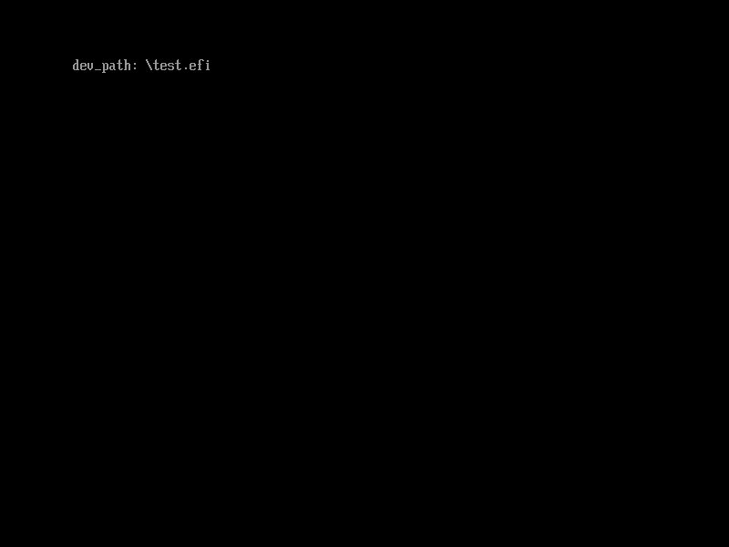
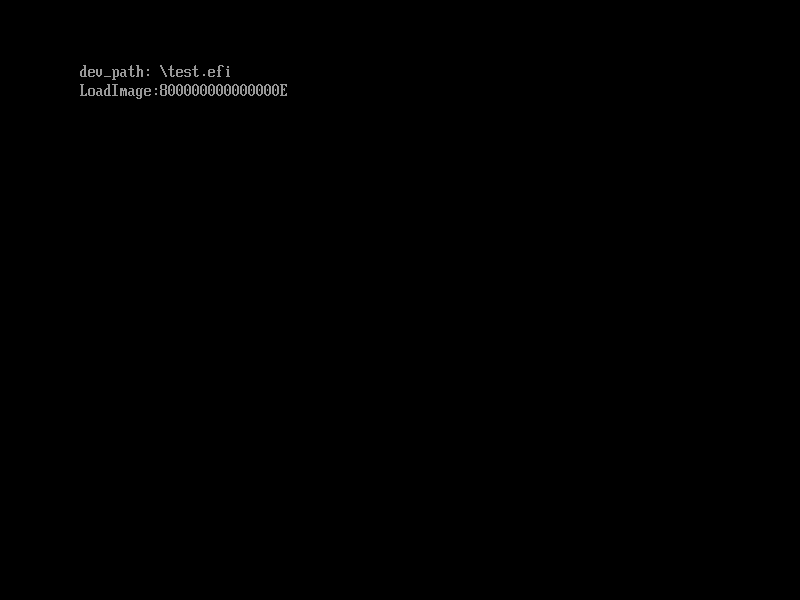
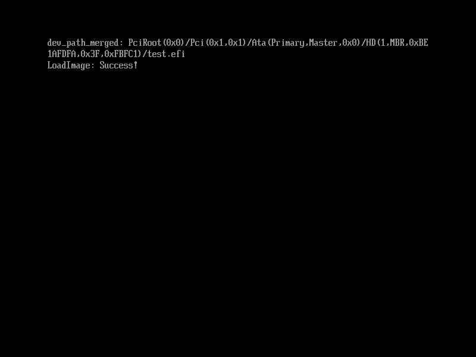
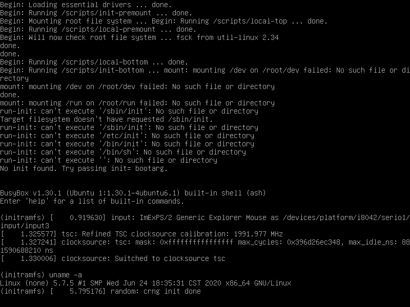

从零开始的UEFI裸机编程
フルスクラッチで作る!UEFIベアメタルプログラミング
大神 祐真 著, 神楽坂琴梨 译
本书是一份入门向的UEFI编程教程，介绍如何在不使用外部库和开发工具链，只使用UEFI API的情况下编写UEFI应用程序，由两部分组成：
- 第一部分: 介绍UEFI的基本概念，如何阅读UEFI标准文档，并通过编写一个UEFI应用程序来介绍UEFI固件的常用功能。
- 第二部分: 介绍更多的UEFI API，以及如何引导Linux
即使你是EDK2、GNU-EFI这些工具链的用户，用它们调用UEFI API的方式也是类似的，这本书仍值得一读。
本书的HTML版本可以在 https://kagurazakakotori.github.io/ubmp-cn 在线阅读。如果您需要PDF版本或是纸质版，您可以点击右上角的“打印”按钮生成一份。
本书是免费且开源的，你可以在 https://github.com/kagurazakakotori/ubmp-cn 找到源代码。如果您发现和本书相关的任何问题，欢迎在 Issues 中提出。
书中的示例代码可以从 https://github.com/kagurazakakotori/ubmp-cn-code 获取，它们也是开源的。同样地，如果您发现示例代码的任何问题，也欢迎您在 Issues 中提出。
日文版的相关资料可以在作者大神祐真的网站 http://yuma.ohgami.jp 获取。
本书采用 mdBook 构建
译者的话
首先，感谢您阅读本书！
这本书是我学习UEFI编程时所使用的资料，也是网上为数不多的这方面介绍的比较详细的资料。如果你尝试搜索"uefi programming tutorial"，会发现很多内容，像是OSDev上关于UEFI的介绍，只介绍到Hello world之后就结束了，看完之后一脸懵逼，不知道接下来该从何下手，至少我当时是这样的。这本书是我能找到的相对来说，我个人认为最适合入门的资料，这是我翻译这本书的第一个原因。
翻译这本书的第二个原因是它介绍了另一种UEFI开发的方式。我刚初学的时候，在配置环境这块被EDK2劝退了。使用EDK2来开发虽然是最主流的开发方式，但是EDK2的环境搭建是非常痛苦的，它对于Linux的支持并不完美，而且很挑剔编译器，GCC只支持到5，说是支持Clang 9和Visual Studio 2019，但很多模块用这两者根本无法成功编译（我唯一成功的是在Windows上用VS2019编译出了EmulatorPkg）。后来我了解到了gnu-efi这个替代工具链，找到了gnu-efiでUEFI遊びをはじめよう这篇文章，它推荐了这本书的日文版作为参考。我读了一下发现还不错，而且它介绍的不用edk2或是gnu-efi这些工具的裸机编程，也是一种比较新鲜的方式。
虽然我并不完全认同作者的一些做法，像是不使用标准的UEFI类型，但这本书的内容上还是没有问题的，而且本书的实际内容核心是在介绍UEFI API的功能和用法，这点无论用什么来开发，都是相通的，所以我个人认为这本书还是很有价值的。
我个人认为这本书最精彩的地方是一上来的1.2.1 遵循UEFI标准编写程序这节。它着重介绍了怎么去阅读UEFI标准文档找到需要的信息，我认为掌握这点对学习UEFI开发是很有帮助的。
翻译中文版时，我对于日文版做了一些较大的改动，包括重写了一些内容和补充了一些日文版所没有的内容，这些地方都已一一标出。此外，日文版由于纸张这个载体限制，图片都是黑白的，中文版替换了书中几乎所有的图片，希望能给大家一个更直观的感受。
中文版的示例代码在日文版的基础上也进行了许多的修改，包括功能更为强大的Makefile，加入了QEMU/OVMF上对鼠标的支持，以及我用gnu-efi重新实现的书中的示例。关于示例代码的更多内容可以看示例代码的自述文件。
这本书我开坑翻译是2019年12月，直到现在大体完成，已经是2020年7月。咕了这么久既有新冠疫情的原因，也有我个人的一些原因。在发布这本书时，书中内容并不完美，如果您发现了书中或是示例代码的问题，欢迎您提Issue来帮助本书变得更好。
希望这本书能够帮到初学UEFI的各位同学。如果您觉得这本书对您有帮助，您可以给这本书点个Star。
最后，再次感谢您阅读本书！
神楽坂琴梨 (当然这不是我真名)
2020年7月
第一部分
引言
感谢您阅读本书！
本书将讨论在UEFI环境下进行“裸机编程”（Bare metal programming）。
“裸机编程”是指编写在不使用操作系统的情况下直接操作硬件的程序的方式。
“直接操作硬件”并非意味着需要编写程序来控制硬件一步一步地发出电信号。许多硬件在其内部的只读存储器（ROM）中拥有预置的软件，称为“固件”。通过正确地调用固件所提供的接口，我们可以达到“直接操作硬件”这一目的。
BIOS是长期以来PC上最具有代表性的固件，而近年来，BIOS已经被标准化的UEFI取代。在打开计算机电源的时候，BIOS或是UEFI固件将会先运行，再从磁盘上引导操作系统。
跟随着近年的趋势，本书将在UEFI上进行裸机编程。因此，本书将主要介绍如何使用UEFI固件内置的功能。
关于poiOS
在本书中，我们将通过调用UEFI内置的功能，编写一个类似于操作系统的程序。这里我们称它为poiOS1，其架构如图1所示：

图1：poiOS的构造
获取本书相关资源
本书日语原版的相关资源，例如PDF电子版、示例源代码以及预编译的二进制文件，可以在下面的网站找到
此外，正如上面的网页中所述，示例源代码被发布在下面的Github版本库中。源代码根据各章节被放在不同的目录中，每个目录的开头即为所对应的章节序号。由于篇幅所限，书中仅引用代码片段，如果您想要查看完整的源代码，请点击下面的链接
中文版本的示例代码位于下面的链接
译者注：poi为游戏《舰队Collection》中角色“夕立”的口癖
Hello UEFI!
本章将介绍在UEFI下进行裸机编程的流程，包括环境的搭建，和编写并执行第一个“Hello world”程序。
在UEFI固件中加载并执行的程序被称为“UEFI应用程序”（UEFI Application）。本书介绍的裸机编程，是编写UEFI应用程序，并在PC上运行。其一般流程如下：
- 遵循UEFI标准编写程序
- 交叉编译为UEFI可执行的二进制文件
- 创建启动盘引导并运行UEFI应用程序
接下来，我们将一步步地编写我们的第一个“Hello UEFI!”程序。
遵循UEFI标准编写程序
阅读UEFI标准文档的方法
UEFI标准文档可以在 https://uefi.org/specifications 找到。本书参照的的是2.3.1版本1。但是，对于本书中所涉及的范围，在不同的UEFI标准版本或是实现下，几乎不存在兼容性问题。
UEFI标准文档包括C代码片段，并且UEFI固件上所运行的程序基本上都是用C语言编写的。例如，在UEFI标准文档"4.1 UEFI Image Entry Point(P.75)"中，定义了UEFI程序的入口点2（图2.1）。

图2.1：标准文档中定义的入口点
图2.1中展示了入口点函数的参数和返回值。由于入口点函数是通过编译期参数指定的，它可以取任何名字。参数和返回值被定义成了特殊的类型，这些类型也可以在标准文档中找到。比如在标准文档中搜索EFI_STATUS，我们可以找到"2.3.1 Data Types(P.23)"（图2.2）。

图2.2："2.3.1 Data Types" 中的 "Table 6. Common UEFI Data Types"（节选）
图2.2展示了标准文档中常见类型的定义。在这里，EFI_STATUS表示的是状态码，它的类型是UINTN。UINTN是一个与平台相关的类型，在32位CPU上，它表示32位无符号整数（unsigned int），而在64位CPU上，它表示64位无符号整数（unsigned long long）3。
此外，UEFI标准中还定义了IN、OUT、OPTIONAL、EFIAPI等修饰符（Modifier），它们是对函数或参数的说明。在像EDK2或是gnu-efi这些既有的开发环境和工具链中4，它们均被定义为空字符串。
但是在上表中，我们并不能找到"EFI_SYSTEM_TABLE"的定义。这是由于EFI_SYSTEM_TABLE是一个结构体的别名，它在另一个章节被定义。通过搜索标准文档，它在"4.3 EFI System Table(P.78)"中被定义，并且它也有一个C语言代码的定义（图2.3）。

图2.3：EFI_SYSTEM_TABLE的定义
图2.3展示了结构体中的成员。UEFI标准文档中有一个叫做“协议（Protocol）”的概念。在UEFI中，功能被分为一个个单元，这些单元被称为“协议”，并且它们被定义成以_PROTOCOL结尾的结构体。名如~_PROTOCOL这样的结构体包含一系列的函数指针，通过这些函数指针可以调用UEFI固件中的内置功能。
图2.3中的EFI_SIMPLE_TEXT_OUTPUT_PROTOCOL是用来把字符输出到屏幕上的协议。那么它有哪些成员那？同样地，我们搜索标准文档，可以在"11.4 Simple Text Output Protocol(P.424)"中找到这个结构体的定义（图2.4）。

图2.4：EFI_SIMPLE_TEXT_OUTPUT_PROTOCOL的定义
查看图2.4中的"Protocol Interface Structure"，可以看到它有一个叫做"OutputString"的成员，这就是被用于在屏幕上显示文字的函数。图2.4中的"Parameters"是对各个成员的描述，并且"OutputString"拥有一个指向其定义页面的链接（下划线的"OutputString()"处）。OutputString在标准文档中的定义如图2.5所示。

图2.5：OutputString函数的定义
它的参数的含义如下：
IN EFI_SIMPLE_TEXT_OUTPUT_PROTOCOL *This: 指向EFI_SIMPLE_TEXT_OUTPUT_PROTOCOL自身的指针IN CHAR16 *String: 指向输出的字符串的指针，UEFI的字符是Unicode编码的（2字节/UCS-2）
返回值类型为EFI_STATUS(在AMD64平台上是uint64_t)。这个值表示函数的执行结果。函数如果执行成功，那么返回0，如果产生错误或警告返回非0值。本书中只检查“函数是否返回0”（即函数是否成功执行），对于其他的函数返回值，请参考标准文档"Appendix D Status Codes(P.1873)"中对各个协议返回值的描述。
由于UEFI所有协议中函数的第一个参数均为指向协议自身的指针，并且返回值类型均为EFI_STATUS类型。在接下来的章节中这点将作为约定，不再进行说明。
此外，由于部分UEFI固件启动时会在屏幕上显示内容（比如厂商的logo），在这里，我们先进行一次清屏操作，再调用OutputString在屏幕上打印字符串。
用于清屏的函数是EFI_SIMPLE_TEXT_OUTPUT_PROTOCOL中的ClearScreen函数（标准文档"11.4 Simple Text Output Protocol(P.437)"）。虽然不在图2.4中，但它的描述仍然在"Parameters"中。ClearScreen的定义如图2.6所示，它的参数只有一个指向协议自身的This指针。

图2.6: ClearScreen的定义
在接下来的章节中，将会在示例代码中说明函数参数的定义。
编写UEFI应用程序
了解了入口点的标准和如何调用函数来向屏幕中打印字符串之后，是时候编写一个hello world程序了。这一章的示例代码在目录hello中 (日文版为sample1_1_hello_uefi)。
在本书中使用的开发环境为Debian GNU/Linux，这是作者的工作环境。但是，你可以在几乎任何支持交叉编译和格式化U盘（具体将在之后叙述）的环境下开发。当然，任何文本编辑器都可以。
在屏幕上打印"Hello UEFI!"的源代码如代码2.1所示。
struct EFI_SYSTEM_TABLE {
char _buf[60];
struct EFI_SIMPLE_TEXT_OUTPUT_PROTOCOL {
unsigned long long _buf;
unsigned long long (*OutputString)(
struct EFI_SIMPLE_TEXT_OUTPUT_PROTOCOL *This,
unsigned short *String);
unsigned long long _buf2[4];
unsigned long long (*ClearScreen)(
struct EFI_SIMPLE_TEXT_OUTPUT_PROTOCOL *This);
} *ConOut;
};
void efi_main(void *ImageHandle __attribute__ ((unused)),
struct EFI_SYSTEM_TABLE *SystemTable)
{
SystemTable->ConOut->ClearScreen(SystemTable->ConOut);
SystemTable->ConOut->OutputString(SystemTable->ConOut, L"Hello UEFI!\n");
while (1);
}
代码2.1： sample1_1_hello_uefi/main.c
代码2.1中的EFI_SYSTEM_TABLE仅定义了要使用的函数。我们用一个变量或是数组来占用未使用的函数的位置，来使得要使用的函数的地址正确。
efi_main是我们定义的入口点的函数名。在调用OutputString函数之前，我们先调用ClearScreen函数来清屏。函数末尾是一个无限循环，也就是说，这个函数永远不会返回。
此处，所有像EFI_STATUS这样的UEFI类型都被写为unsigned long long。这仅仅是作者个人的偏好。这么做会降低程序的可移植性，对于UEFI类型的最佳做法是用typedef来定义它们。
在接下来的内容中，我们假设把代码1.1的内容保存在文件main.c中。
由于作者用于测试的实机环境为Lenovo ThinkPad E450，其UEFI固件遵循2.3.1版标准
一般的C语言程序的入口点为main函数
译者注：此处更精确的描述应为32位为uint32_t, 64位为uint64_t
本书由于采用裸机编程，上述两者并不会被使用，但它们的源代码会作为调用UEFI功能的参考
交叉编译为UEFI可执行格式
编写完源代码之后，我们需要将它编译成UEFI可以执行的PE32+12格式。由于Linux的可执行文件为ELF格式，这里我们需要进行交叉编译。
在交叉编译之前，我们需要安装相对应的交叉编译器gcc-mingw-w64-x86-64：
$ sudo apt install gcc-mingw-w64-x86-64
安装完成后，使用下面的命令进行编译：
$ x86_64-w64-mingw32-gcc -Wall -Wextra -e efi_main -nostdinc -nostdlib \
-fno-builtin -Wl,--subsystem,10 -o main.efi main.c
参数-e用于指定程序入口点，这里我们指定为efi_main，这意味着程序将从efi_main函数开始运行。另外，参数--subsystem,10告诉编译器将生成的可执行文件类型设置为UEFI应用程序。得到的main.efi就是PE32+格式的UEFI可执行文件。
此外，其他能够编译成UEFI应用程序类型的PE32+格式可执行文件的方法也是可以的。例如使用Windows上的x86_64-w64-mingw32-gcc3。
使用Makefile自动编译
示例代码中包括了Makefile文件。我们只需要进入各个例子的目录中，执行
make命令，就可以轻松的完成编译。$ cd ubmp-cn-code/baremetal/<各个例子的目录> $ make编译得到的可执行文件位于各个例子的目录下。4
这是Windows的可执行文件格式
译者注：PE32+为64位Windows的可执行文件格式，32位的为PE32
参考资料：Windows(64ビット環境)でvimprocをコンパイルしてみよう（在64位Windows环境下编译vimproc/日语）
译者注：这里介绍的是中文版示例代码的Makefile，日文版编译得到的可执行文件位于./fs/EFI/BOOT/BOOTX64.EFI
引导并运行UEFI应用程序
编译得到UEFI可执行文件之后，我们需要将其放在一个UEFI固件可以找到的位置，并创建一个启动盘来运行这个程序。使用U盘是一个简单的办法，接下来将介绍如何创建这么一个启动U盘。
UEFI可以识别FAT格式的文件系统。因此，我们首先需要把U盘格式化成FAT32格式。
格式化成FAT32格式可以使用任何你喜欢的方式。这里介绍使用fdisk来格式化的方式（例子中，U盘的设备路径为/dev/sdb）。
警告：下面的操作将删除U盘上的所有文件，请在操作前做好备份工作
$ sudo fdisk /dev/sdb
Welcome to fdisk (util-linux 2.25.2).
Changes will remain in memory only, until you decide to write them.
Be careful before using the write command.
Command (m for help): o # 创建新的DOS分区表
Created a new DOS disklabel with disk identifier 0xde746309.
Command (m for help): n # 建立新的分区
Partition type
p primary (0 primary, 0 extended, 4 free)
e extended (container for logical partitions)
Select (default p): p
Partition number (1-4, default 1): 1
First sector (2048-15228927, default 2048):
Last sector, +sectors or +size{K,M,G,T,P} (2048-15228927, default 15228927):
Created a new partition 1 of type 'Linux' and of size 7.3 GiB.
Command (m for help): t # 改变分区类型
Selected partition 1
Hex code (type L to list all codes): b
If you have created or modified any DOS 6.x partitions, please see the fdisk \\
documentation for additional information.
Changed type of partition 'Linux' to 'W95 FAT32'.
Command (m for help): w # 保存分区表
The partition table has been altered.
Calling ioctl() to re-read partition table.
Syncing disks.
$ sudo mkfs.vfat -F 32 /dev/sdb1 # 格式化分区
mkfs.fat 3.0.27 (2014-11-12)
格式化完成后，将先前的main.efi重命名为BOOTX64.EFI，并放在U盘中的EFI/BOOT目录下。你可以用下面的命令来完成这个操作：
$ sudo mount /dev/sdb1 /mnt
$ sudo mkdir -p /mnt/EFI/BOOT
$ sudo cp main.efi /mnt/EFI/BOOT/BOOTX64.EFI
$ sudo umount /mnt
关闭计算机，并从刚才所制作的U盘启动，屏幕上将会显示“Hello UEFI!”（图2.7）。

图2.7: 屏幕上显示的“Hello UEFI!”
由于我们的UEFI应用程序没有关机功能，所以请轻按电源键关机来退出。（记得拔掉你的U盘）
使用EFI Shell运行UEFI应用程序
本段为译者补充
如果你的电脑固件中带有EFI Shell，恭喜你，你只需要将可执行文件放在U盘中，启动到EFI Shell中，就可以手动运行它。EFI Shell的操作与一般的*nix shell非常类似，并且也拥有Tab自动补全功能。
要找到装有可执行文件U盘，使用
map -r命令列出所有的被UEFI识别的文件系统，使用fs#:命令进入某个文件系统（例如fs0:），此时命令提示符将会变化。进入文件系统后，使用
ls命令可以列出根目录下的文件，输入文件名就可以执行相应的UEFI应用程序。在EFI Shell中，除了切换文件系统需要用到
fs#:命令，其他的cd,ls等命令，与一般的shell是类似的。
在QEMU上运行1
UEFI应用程序也可以在QEMU中运行。但是，QEMU默认不带有UEFI固件，我们需要手动安装OVMF(Open Virtual Machine Firmware)软件包。
$ sudo apt install qemu-system-x86 ovmfQEMU有将目录挂载为虚拟FAT驱动器的功能。例如，创建一个名为
esp的目录，将efi文件放到esp/EFI/BOOT/BOOTX64.EFI并使用-drive file=fat:rw:esp,index=0,format=vvfat选项运行QEMU。虚拟机将会把esp目录认作是一个FAT驱动器分区，并会自动启动到其中的BOOTX64.EFI文件。$ qemu-system-x86_64 -bios /usr/share/OVMF/OVMF_CODE.fd -net none \ -drive file=fat:rw:esp,index=0,format=vvfat其中
-net none通过禁用网卡阻止QEMU尝试PXE启动。此外，在示例代码各个例子的Makefile中，包含了QEMU的执行规则。执行
make run命令就可以编译并在QEMU中运行相应的UEFI应用程序。$ cd ubmp-cn-code/baremetal/<各个例子的目录> $ make run然而，QEMU/OVMF存在未实现或是无法运行的功能。在编写本书时，本书中用到的用于获取鼠标输入的
EFI_SIMPLE_POINTER_PROTOCOL无法在虚拟机上运行。2关于示例代码Makefile的更多功能，参见示例代码根目录下的README文件。
显示非ASCII字符（中日韩文字）
中日韩文字可以在Unicode中表示。但是，各个UEFI固件所支持显示的文字有所不同。在作者的联想ThinkPad E450的UEFI固件（版本2.3.1中），平假名和一部分汉字无法显示。
另外，在QEMU/OVMF中，所有的非ASCII字符均无法显示。比如示例代码
hello-cjk中，我们在屏幕上打印下面这些文字:Hello world
你好，UEFI！
こんにちは、UEFI！
在OVMF (版本20191122) 下会看到图2.8这样的结果。
图2.8: QEMU/OVMF中的非ASCII字符显示

译者注：这里介绍的是中文版示例代码做法，与日文版并非完全相同
译者注：无法运行并不是因为QEMU/OVMF不支持，而是因为OVMF自身不带鼠标驱动，手动载入鼠标驱动即可解决问题。幸运的是，译者已经在中文版所有涉及鼠标的例子中加入了载入鼠标驱动的脚本 (所用驱动UsbMouseDxe.efi1来自 Clover EFI bootloader r5070)，你只需要执行make run并稍作等待就可以在QEMU下体验了。
译者注：使用UsbMouseDxe.efi而非Ps2MouseDxe.efi是由于QEMU默认的PS/2鼠标无法被识别，这里使用USB鼠标替代。具体无法识别的原因未知。
获取按键输入
第1章介绍了如何阅读UEFI标准文档，以及如何编写并执行一个UEFI应用程序。本章将介绍如何获取按键输入，并编写一个简单的Shell。
简单文本输入协议
获取按键输入的函数位于简单文本输入协议（Simple Text Input Protocol）EFI_SIMPLE_TEXT_INPUT_PROTOCOL中。和上一章所介绍的简单文本输出协议EFI_SIMPLE_TEXT_OUTPUT_PROTOCOL一样，它也是EFI系统表（System Table）EFI_SYSTEM_TABLE的一个成员。

图3.1：EFI_SYSTEM_TABLE的定义
EFI_SIMPLE_TEXT_INPUT_PROTOCOL的定义如代码3.1所示，这里只定义了我们要使用的函数。关于该结构体的具体定义，参见标准文档"11.3 Simple Text Input Protocol(P.420)"
struct EFI_SIMPLE_TEXT_INPUT_PROTOCOL {
unsigned long long _buf;
unsigned long long (*ReadKeyStroke)(
struct EFI_SIMPLE_TEXT_INPUT_PROTOCOL *This,
struct EFI_INPUT_KEY *Key);
};
代码3.1: EFI_SIMPLE_TEXT_INPUT_PROTOCOL的定义
按键输入可以通过ReadKeyStroke函数来获取（标准文档"11.3 Simple Text Input Protocol(P.423)"）。该函数是一个非阻塞的函数，当没有按键输入时，它将会返回一个错误的状态。函数的参数如下（省略第一个参数This指针）:
struct EFI_INPUT_KEY *Key: 指向按键输入缓冲区的指针
结构体EFI_INPUT_KEY的定义如代码3.2所示。
struct EFI_INPUT_KEY {
unsigned short ScanCode;
unsigned short UnicodeChar;
};
代码3.2: EFI_INPUT_KEY的定义
其成员的含义如下：
unsigned short ScanCode: 按键的扫描码（Scan Code），用于表示Unicode范围之外的按键（Esc键、方向键、功能键等）。扫描码的完整列表见标准文档"Table 88(P.410)"。本书接下来的内容中将只会使用Esc键（扫描码为0x17）。对于Unicode范围内的按键，其扫描码为0。unsigned short UnicodeChar: 当输入按键在Unicode范围内时为其所对应的Unicode值，否则为0。
编写一个回显程序
代码3.3展示了一个回显程序的例子。这个程序使用ReadKeyStroke的函数，把输入的文字输出到屏幕上。本节示例代码的目录是echo (日文版为sample2_1_echoback)。
struct EFI_INPUT_KEY {
unsigned short ScanCode;
unsigned short UnicodeChar;
};
struct EFI_SYSTEM_TABLE {
char _buf1[44];
struct EFI_SIMPLE_TEXT_INPUT_PROTOCOL {
unsigned long long _buf;
unsigned long long (*ReadKeyStroke)(
struct EFI_SIMPLE_TEXT_INPUT_PROTOCOL *This,
struct EFI_INPUT_KEY *Key);
} *ConIn;
unsigned long long _buf2;
struct EFI_SIMPLE_TEXT_OUTPUT_PROTOCOL {
unsigned long long _buf;
unsigned long long (*OutputString)(
struct EFI_SIMPLE_TEXT_OUTPUT_PROTOCOL *This,
unsigned short *String);
unsigned long long _buf2[4];
unsigned long long (*ClearScreen)(
struct EFI_SIMPLE_TEXT_OUTPUT_PROTOCOL *This);
} *ConOut;
};
void efi_main(void *ImageHandle __attribute__ ((unused)),
struct EFI_SYSTEM_TABLE *SystemTable)
{
struct EFI_INPUT_KEY key;
unsigned short str[3];
SystemTable->ConOut->ClearScreen(SystemTable->ConOut);
while (1) {
if (!SystemTable->ConIn->ReadKeyStroke(SystemTable->ConIn, &key)) {
if (key.UnicodeChar != L'\r') {
str[0] = key.UnicodeChar;
str[1] = L'\0';
} else {
str[0] = L'\r';
str[1] = L'\n';
str[2] = L'\0';
}
SystemTable->ConOut->OutputString(SystemTable->ConOut, str);
}
}
}
代码3.3： echo/main.c
上面的代码中，我们把EFI_SIMPLE_TEXT_INPUT_PROTOCOL的定义添加到了EFI_SYSTEM_TABLE中。
efi_main函数调用ClearScreen清屏后，将进入一个无限循环。在这个循环中，当ReadKeyStroke成功获取一个按键输入后，我们把输入的字符key.UnicodeChar放入字符串str中，添加\0结尾，并调用OutputString函数来把这个字符输出到屏幕上。另外，对于Enter键，由于获取到的字符为CR(\r)，输出时还加上了LF(\n)来实现换行。请注意，在UEFI中，输入的字符不会被自动显示在屏幕上，因此输入的内容只会显示一遍。
当运行这个例子时候，你在键盘上的输入将会一模一样地显示在屏幕上（图3.2）。
图3.2: 回显程序执行时的截图
补充: 等待键盘输入 (WaitForKey)
在代码2.3的while循环中，ReadKeyStroke将会被调用多次，直至其成功获取到一个按键输入。然而，在获取到输入前阻塞这个循环，是一个对CPU更为友好的方式。这一部分示例代码的目录是echo-wait。
为此，EFI_SIMPLE_TEXT_INPUT_PROTOCOL提供了一个名为WaitForKey的成员来实现这样的阻塞输入的功能。（代码3.4/标准文档"11.3 Simple Text Input Protocol(P.421)"）
struct EFI_SIMPLE_TEXT_INPUT_PROTOCOL {
unsigned long long _buf;
unsigned long long (*ReadKeyStroke)(
struct EFI_SIMPLE_TEXT_INPUT_PROTOCOL *This,
struct EFI_INPUT_KEY *Key);
void *WaitForKey;
};
代码3.4: WaitForKey的定义
标准文档中定义的WaitForKey的类型是EFI_EVENT，这是UEFI中代表事件的类型，它是void *的别名。如标准文档第421页所述，WaitForKey作为WaitForEvent函数的参数来使用。
WaitForEvent是阻塞进程直到所指定的事件发生的函数，其在SystemTable->BootService被定义。BootServices是一个EFI_BOOT_SERVICES类型的结构体，UEFI通过它提供一系列函数（服务），这些函数主要用于实现引导加载程序(Bootloader)（详细内容将在下章讨论）。WaitForEvent的定义如代码2.5所示：
unsigned long long (*WaitForEvent)(
unsigned long long NumberOfEvents,
void **Event,
unsigned long long *Index);
代码2.5: WaitForEvent的定义
其参数含义如下：
unsigned long long NumberOfEvents: 第二个参数Event中的事件数量void **Event: 所要等待的事件数组unsigned long long *Index: 指向变量的指针。当满足条件的某一事件发生时，该变量将会被设为事件数组中该事件的索引值。
使用WaitForKey和WaitForEvent函数来等待按键输入的例子如代码3.6所示。
struct EFI_INPUT_KEY key;
unsigned long long waitidx;
/* 阻塞，直到按键输入 */
SystemTable->BootServices->WaitForEvent(1,&(SystemTable->ConIn->WaitForKey), &waitidx);
/* 获取所输入的按键 */
SystemTable->ConIn->ReadKeyStroke(SystemTable->ConIn, &key);
代码3.6: 使用WaitForKey和WaitForEvent的例子
编写一个简单的Shell
现在，我们已经了解了在控制台屏幕上输入和输出字符的方法。要编写一个类似于操作系统的程序，我们首先需要编写一个类似于Shell的程序。本节示例代码的目录为shell (日文版为sample2_2_shell)。
在这个例子中，我们会组织一个文件结构，这个结构将会是接下来编写类操作系统程序的基础。这里我们把一些代码适当地封装为函数，并且按照下面的规则放在多个文件中。
main.c: 程序入口点（efi_main函数）efi.h,efi.c: UEFI标准定义和初始化函数common.h,common.c: 通用定义和函数shell.h,shell.c: Shell程序的实现
由于在UEFI下几乎任何操作都需要用到系统表（System Table），因此我们把入口点函数的SystemTable参数保存在一个全局变量中。这一操作将在efi.c（代码3.7）中的初始化过程（efi_init函数）中进行1。并且efi_init会调用SetWatchdogTimer函数，这点将在稍后说明。
#include "efi.h"
#include "common.h"
struct EFI_SYSTEM_TABLE *ST;
void efi_init(struct EFI_SYSTEM_TABLE *SystemTable)
{
ST = SystemTable;
ST->BootServices->SetWatchdogTimer(0, 0, 0, NULL);
}
代码3.7: shell/efi.c
代码3.8展示了一个简单的Shell程序的代码。代码3.9则是这个程序的入口点函数。
#include "common.h"
#include "shell.h"
#define MAX_COMMAND_LEN 100
void shell(void)
{
unsigned short com[MAX_COMMAND_LEN];
while (TRUE) {
puts(L"poiOS> ");
if (gets(com, MAX_COMMAND_LEN) <= 0)
continue;
if (!strcmp(L"hello", com))
puts(L"Hello UEFI!\r\n");
else
puts(L"Command not found.\r\n");
}
}
代码3.8: shell/shell.c
#include "efi.h"
#include "shell.h"
void efi_main(void *ImageHandle __attribute__ ((unused)),
struct EFI_SYSTEM_TABLE *SystemTable)
{
SystemTable->ConOut->ClearScreen(SystemTable->ConOut);
efi_init(SystemTable);
shell();
}
代码3.9: shell/main.c
在代码3.8中使用了"poiOS"作为命令提示符来使得这个程序更像是一个操作系统2。
代码3.8中所使用的各种常量，以及puts、gets和strcmp这些函数，都定义在common.h和common.c中。它们仅仅是一些对迄今为止我们所讨论过的UEFI内置功能封装后的函数，由于它们并没有什么特别的实现方式，因此我们在此不详细讨论它们。如果你想一探究竟的话，可以去GitHub下载完整的源代码。
代码3.9中，efi_init函数初始化UEFI执行环境，并通过调用shell函数启动Shell。接下来的内容中，我们将不会修改main.c。
图3.3展示了这个程序的运行情况。

图3.3: Shell运行时的截图
解除5分钟的看门狗计时器（Watchdog Timer）限制
事实上，在UEFI应用程序启动时，看门狗计时器将会被设置为5分钟。所以如果你什么都不做的话，UEFI应用程序运行5分钟后，固件将会重启计算机。看门狗计时器可以通过
SystemTable->BootServices->SetWatchdogTimer来禁用。函数
SetWatchdogTimer的定义如代码2.10所示（标准文档"6.5 Miscellaneous Boot Services(P.201)"）。unsigned long long (*SetWatchdogTimer)( unsigned long long Timeout, unsigned long long WatchdogCode, unsigned long long DataSize, unsigned short *WatchdogData);代码3.10:
SetWatchdogTimer的定义它的参数含义如下：
unsigned long long Timeout: 看门狗计时器的超时时间（秒为单位）。为0则禁用，禁用时其他的参数可为0或NULL。unsigned long long WatchdogCode: 看门狗计时器超时时的事件ID。本书不使用。unsigned long long DataSize:WatchdogData的内容大小（字节为单位）。unsigned short *WatchdogData: 指向空字符结尾字符串的指针。看门狗超时事件的描述，将会随事件记录至日志中。本书不使用。3而禁用看门狗计时器的示例代码如代码3.11所示。
ST->BootServices->SetWatchdogTimer(0, 0, 0, NULL);代码3.11: 禁用看门狗计时器
在EDK2或是gnu-efi等开发环境和工具链中同样也将SystemTable保存在全局变量中
作者本来想使用"mockOS"或是"OSmodoki"作为命令提示符，但经过一番搜索，这两个名字都已经有人用了
译者注：作者原文为“可选，本书不使用。另外，我也不知道这是什么（看门狗事件发生时的附加描述？）”，此处为译者的理解
在屏幕上绘制图形
现在我们已经有了一个简单的Shell，接下来我们来制作一个简单的图形化界面（GUI）。本章将介绍如何在屏幕上绘制图形，并在屏幕上画一个矩形作为图标。
图形输出协议(GOP)
绘制图形要用到的是图形输出协议（Graphics Output Protocol）EFI_GRAPHICS_OUTPUT_PROTOCOL（标准文档"11.9 Graphics Output Protocol(P.464)"），简称GOP。但是，这个协议并不是系统表中的成员。
事实上，大部分的协议需要使用SystemTable->BootServices中的函数来获得它的入口地址（标准文档"4.4 EFI Boot Services Table(P.80)"）。之前我们提到过，BootServices是一个EFI_BOOT_SERVICES类型的结构体，它包括一系列的函数（服务），这些函数主要用于实现引导加载程序(Bootloader)。1
对于大部分不在系统表中的协议，可以通过SystemTable->BootServices->LocateProtocol函数（标准文档"6.3 Protocol Handler Services(P.184)"）来获取它的入口地址。LocateProtocol函数通过每个协议唯一的GUID来定位它们，而各个协议对应的GUID在标准文档中被定义。例如，图4.1中的GUID就是我们这里要用到的EFI_GRAPHICS_OUTPUT_PROTOCOL的GUID。

图4.1: EFI_GRAPHICS_OUTPUT_PROTOCOL的定义
LocateProtocol的定义如代码4.1所示。
unsigned long long (*LocateProtocol)(
struct EFI_GUID *Protocol,
void *Registration,
void **Interface);
代码4.1: LocateProtocol的定义
其参数含义如下：
struct EFI_GUID *Protocol: 所需获取的协议的GUIDvoid *Registration: 可选项。某个协议接口实例的注册键（Registration key），来自BootServices->RegisterProtocolNotify。本书不使用。2void **Interface: 指向返回的协议的指针。
和SystemTable一样，这里我们使用一个全局变量GOP来存放EFI_GRAPHICS_OUTPUT_PROTOCOL，并且在efi_init函数中初始化这个全局变量。加入了GOP支持的efi_init函数如代码4.2所示。
void efi_init(struct EFI_SYSTEM_TABLE *SystemTable)
{
struct EFI_GUID gop_guid = {0x9042a9de, 0x23dc, 0x4a38, \
{0x96, 0xfb, 0x7a, 0xde, \
0xd0, 0x80, 0x51, 0x6a}};
ST = SystemTable;
ST->BootServices->SetWatchdogTimer(0, 0, 0, NULL);
ST->BootServices->LocateProtocol(&gop_guid, NULL, (void **)&GOP);
}
代码4.2: sample3_1_draw_rect/efi.c
现在我们得到了GOP的入口地址，在调用它之前，我们还需要添加GOP的定义（标准文档"11.9 Graphics Output Protocol(P.466)"），如代码4.3所示。注意，在这个例子中我们只添加了我们在本书中要用到的成员的定义，对于完整的定义，参见标准文档。
struct EFI_GRAPHICS_OUTPUT_PROTOCOL {
unsigned long long _buf[3];
struct EFI_GRAPHICS_OUTPUT_PROTOCOL_MODE {
unsigned int MaxMode;
unsigned int Mode;
struct EFI_GRAPHICS_OUTPUT_MODE_INFORMATION {
unsigned int Version;
unsigned int HorizontalResolution;
unsigned int VerticalResolution;
enum EFI_GRAPHICS_PIXEL_FORMAT {
PixelRedGreenBlueReserved8BitPerColor,
PixelBlueGreenRedReserved8BitPerColor,
PixelBitMask,
PixelBltOnly,
PixelFormatMax
} PixelFormat;
} *Info;
unsigned long long SizeOfInfo;
unsigned long long FrameBufferBase;
} *Mode;
};
代码4.3: EFI_GRAPHICS_OUTPUT_PROTOCOL的定义
绘制图形是通过向帧缓冲区写入像素数据来实现的。变量GOP->Mode->FrameBufferBase定义了帧缓冲区的起始地址。像素的格式则可以通过变量GOP->Mode->Info->PixelFormat得到，PixelFormat是一个EFI_GRAPHICS_PIXEL_FORMAT类型的枚举成员。
代码4.4展示了枚举EFI_GRAPHICS_PIXEL_FORMAT的定义。在作者的开发环境（ThinkPad E450和QEMU/OVMF）下，像素格式为PixelBlueGreenRedReserved8BitPerColor。因此，本书的代码是基于"BGR+Reserved各8位"的情况下的。如果您的像素格式不同，请对代码进行适当的修改之后再运行。
enum EFI_GRAPHICS_PIXEL_FORMAT {
PixelRedGreenBlueReserved8BitPerColor,
PixelBlueGreenRedReserved8BitPerColor,
PixelBitMask,
PixelBltOnly,
PixelFormatMax
};
代码4.4: EFI_GRAPHICS_PIXEL_FORMAT的定义
要检查GOP->Mode->Info->PixelFormat的值，我们需要向屏幕中输出数值的函数（回忆一下，OutputString只能输出字符串）。在下一章的例子(目录sample4_1_get_pointer_state)中，common.c新增加了输出16进制数的函数puth，您可以参考它的实现。3
此外，结构体EFI_GRAPHICS_OUTPUT_BLT_PIXEL定义了像素在帧缓冲区中的格式，如代码4.5所示。（标准文档"11.9 Graphics Output Protocol(P.474)"）
struct EFI_GRAPHICS_OUTPUT_BLT_PIXEL {
unsigned char Blue;
unsigned char Green;
unsigned char Red;
unsigned char Reserved;
};
代码4.5: EFI_GRAPHICS_OUTPUT_BLT_PIXEL的定义
至此，我们添加了在屏幕上绘制图形所需要的定义。
形如~_SERVICES的还有一个EFI_RUNTIME_SERVICES，同样也位于系统表中，可以通过SystemTable->RuntimeServices来使用它
译者注：作者原文为“可选项。似乎是根据需要指定的注册键。本书不使用。”，此处为译者的理解
译者注：事实上，要判定是何种像素格式，可以完全不需要输出数值，使用if-else或是switch-case语句即可
在屏幕上画一个矩形
了解了帧缓冲区起始地址和像素格式之后，可以看出，要在屏幕上绘制图形，所要做的就是写入帧缓冲区对应的像素信息。本节将以画一个矩形为例子来介绍这个过程，示例代码的目录为draw-rect (日文版为sample3_1_draw_rect)。
首先，我们新建一个存放图形处理相关的代码的源文件graphics.c，并在其中创建一个函数draw_pixel，这个函数用于在屏幕上指定位置绘制一个像素（代码4.6）。
void draw_pixel(unsigned int x, unsigned int y,
struct EFI_GRAPHICS_OUTPUT_BLT_PIXEL color)
{
unsigned int hr = GOP->Mode->Info->HorizontalResolution;
struct EFI_GRAPHICS_OUTPUT_BLT_PIXEL *base =
(struct EFI_GRAPHICS_OUTPUT_BLT_PIXEL *)GOP->Mode->FrameBufferBase;
struct EFI_GRAPHICS_OUTPUT_BLT_PIXEL *p = base + (hr * y) + x;
p->Blue = color.Blue;
p->Green = color.Green;
p->Red = color.Red;
p->Reserved = color.Reserved;
}
代码4.6: draw-rect/graphics.c:draw_pixel
在代码4.6中，主要做了这三件小事：
- 通过
GOP->Mode->Info->HorizontalResolution获取水平分辨率 - 根据水平分辨率，和给定的横纵坐标，计算所要绘制的像素在帧缓冲区中的偏移量
- 向该像素写入给定的颜色值
此处获取到的水平分辨率是UEFI固件默认识别的水平分辨率，并不一定是显示器的物理分辨率。在作者的ThinkPad E450上，这个值是640像素。屏幕的显示模式可以通过EFI_GRAPHICS_OUTPUT_PROTOCOL的SetMode函数（标准文档"11.9 Graphics Output Protocol(P.473)"）来改变，有兴趣的读者可以自行尝试。SetMode函数的参数是显示模式的ID，所支持的显示模式的最大值可以通过GOP->Mode->MaxMode获取。1
接下来，通过调用draw_pixel函数，我们可以方便地实现绘制矩形的函数draw_rect（代码4.7）。
void draw_rect(struct RECT r, struct EFI_GRAPHICS_OUTPUT_BLT_PIXEL c)
{
unsigned int i;
for (i = r.x; i < (r.x + r.w); i++)
draw_pixel(i, r.y, c);
for (i = r.x; i < (r.x + r.w); i++)
draw_pixel(i, r.y + r.h - 1, c);
for (i = r.y; i < (r.y + r.h); i++)
draw_pixel(r.x, i, c);
for (i = r.y; i < (r.y + r.h); i++)
draw_pixel(r.x + r.w - 1, i, c);
}
代码4.7: draw-rect/graphics.c:draw_rect2
存储矩形信息的RECT结构体如代码4.8所示，我们把它的定义放在graphics.h中。
struct RECT {
unsigned int x, y;
unsigned int w, h;
};
代码4.8: 结构体RECT的定义
使用上面这些函数，我们可以向Shell中添加一个绘制矩形的命令rect。添加后的shell.c如代码4.9所示。
#include "common.h"
#include "graphics.h"
#include "shell.h"
#define MAX_COMMAND_LEN 100
void shell(void)
{
unsigned short com[MAX_COMMAND_LEN];
struct RECT r = {10, 10, 100, 200}; /* 新增 */
while (TRUE) {
puts(L"poiOS> ");
if (gets(com, MAX_COMMAND_LEN) <= 0)
continue;
if (!strcmp(L"hello", com))
puts(L"Hello UEFI!\r\n");
else if (!strcmp(L"rect", com)) /* 新增 */
draw_rect(r, white); /* 新增 */
else
puts(L"Command not found.\r\n");
}
}
代码4.9: draw-rect/shell.c
图4.2展示了这个程序的运行情况。
图4.2: 执行rect命令的截图
译者注：获取所有支持的显示模式可以使用GOP->QueryMode函数（标准文档"11.9 Graphics Output Protocol(P.471)"），SetMode和QueryMode这两个函数会在第二部分2.4 设置文本显示模式提到。
译者注：传递结构体作为参数开销较大，这里更好的做法是传递结构体指针
制作一个简单的GUI
这一章的最后，我们来制作一个非常简单的GUI，并且往Shell中加入一个gui命令来调用它。本节示例代码的目录为guimode (日文版为sample3_2_add_gui_mode)。
首先，我们为"GUI"创建一个源文件gui.c。这个简单的GUI只有一个矩形图标，其实现如代码4.10所示。
#include "efi.h"
#include "common.h"
#include "graphics.h"
#include "gui.h"
void gui(void)
{
struct RECT r = {10, 10, 20, 20};
ST->ConOut->ClearScreen(ST->ConOut);
/* 绘制一个矩形图标 */
draw_rect(r, white);
while (TRUE);
}
代码4.10: guimode/gui.c
接着，我们往Shell中加入一个gui命令。当我们输入这个命令时，它会调用上面gui.c中的gui函数。添加了这条命令后的shell.c如代码4.11所示。
#include "common.h"
#include "graphics.h"
#include "shell.h"
#include "gui.h" /* 新增 */
#define MAX_COMMAND_LEN 100
void shell(void)
{
unsigned short com[MAX_COMMAND_LEN];
struct RECT r = {10, 10, 100, 200};
while (TRUE) {
puts(L"poiOS> ");
if (gets(com, MAX_COMMAND_LEN) <= 0)
continue;
if (!strcmp(L"hello", com))
puts(L"Hello UEFI!\r\n");
else if (!strcmp(L"rect", com))
draw_rect(r, white);
else if (!strcmp(L"gui", com)) /* 新增 */
gui(); /* 新增 */
else
puts(L"Command not found.\r\n");
}
}
代码4.11: guimode/shell.c
如图4.3所示，当执行gui命令时，会进入一个全新的界面，其中只有一个矩形图标。

图4.3: 显示一个矩形图标的简易GUI
获取鼠标输入
接下来，我们要在poiOS中加入对鼠标的支持。这一章将介绍如何获取鼠标输入，并且根据输入值来绘制光标。
简单指针协议
用于获取鼠标输入的是简单指针协议（Simple Pointer Protocol）EFI_SIMPLE_POINTER_PROTOCOL（标准文档"11.5 Simple Pointer Protocol(P.439)"）。不要害怕，这里的指针不是内存地址，而是诸如鼠标、轨迹球、触摸板这样的指针设备。本书所要用到的定义如代码5.1所示。
struct EFI_SIMPLE_POINTER_PROTOCOL {
unsigned long long (*Reset)(
struct EFI_SIMPLE_POINTER_PROTOCOL *This,
unsigned char ExtendedVerification);
unsigned long long (*GetState)(
struct EFI_SIMPLE_POINTER_PROTOCOL *This,
struct EFI_SIMPLE_POINTER_STATE *State);
void *WaitForInput;
};
代码5.1: EFI_SIMPLE_POINTER_PROTOCOL的定义
其中，Reset函数用于重置指针设备（鼠标），GetState函数则用于获取设备的状态。
Reset函数的参数含义如下：
unsigned char ExtendedVerification: 用于指示是否执行完整检查的标志，其执行的操作由固件决定。在本书中，由于我们不需要这样的检查，我们将其设置为FALSE。
并且，GetState函数的参数含义如下：
struct EFI_SIMPLE_POINTER_STATE *State: 指向存放指针设备状态的结构体的指针。
代码5.2展示了存放指针设备状态的结构体EFI_SIMPLE_POINTER_STATE的定义。
struct EFI_SIMPLE_POINTER_STATE {
int RelativeMovementX; /* X轴方向的相对移动量 */
int RelativeMovementY; /* Y轴方向的相对移动量 */
int RelativeMovementZ; /* Z轴方向的相对移动量 */
unsigned char LeftButton; /* 左键状态，按下为1，松开为0 */
unsigned char RightButton; /* 右键状态，同上 */
};
代码5.2: EFI_SIMPLE_POINTER_STATE的定义
这个结构体各成员的含义如代码5.2中注释所述。此外，对于一般的鼠标而言，其RelativeMovementZ恒为0。（由于作者并没有什么特别的鼠标，在作者的尝试中，没有出现过不为0的情况）
EFI_SIMPLE_POINTER_PROTOCOL中的WaitForInput是用于等待鼠标输入的函数。和之前3.2 编写一个回显程序中提到的WaitForKey一样，它也作为WaitForEvent函数的参数来使用。
查看鼠标状态(pstat命令)
了解了如何通过EFI_SIMPLE_POINTER_PROTOCOL获取鼠标状态之后，接下来我们来尝试实现一个在终端上打印鼠标状态的功能。这里我们把这个功能作为Shell中的pstat命令来实现。本节示例代码的目录为pstat (日文版为sample4_1_get_pointer_state)。
首先，和上一章的图形输出协议一样，我们需要调用LocateProtocol函数来获取它的入口地址。因此，我们也要向efi.c的efi_init函数中加入处理EFI_SIMPLE_POINTER_PROTOCOL的代码，并将其设置为一个全局变量，如代码5.3所示。
#include "efi.h"
#include "common.h"
struct EFI_SYSTEM_TABLE *ST;
struct EFI_GRAPHICS_OUTPUT_PROTOCOL *GOP;
struct EFI_SIMPLE_POINTER_PROTOCOL *SPP; /* 新增 */
void efi_init(struct EFI_SYSTEM_TABLE *SystemTable)
{
struct EFI_GUID gop_guid = {0x9042a9de, 0x23dc, 0x4a38, \
{0x96, 0xfb, 0x7a, 0xde, \
0xd0, 0x80, 0x51, 0x6a}};
/* 新增(此处开始) */
struct EFI_GUID spp_guid = {0x31878c87, 0xb75, 0x11d5, \
{0x9a, 0x4f, 0x0, 0x90, \
0x27, 0x3f, 0xc1, 0x4d}};
/* 新增(此处结束) */
ST = SystemTable;
ST->BootServices->SetWatchdogTimer(0, 0, 0, NULL);
ST->BootServices->LocateProtocol(&gop_guid, NULL, (void **)&GOP);
/* 新增 */
ST->BootServices->LocateProtocol(&spp_guid, NULL, (void **)&SPP);
}
代码5.3: pstat/efi.c
向Shell中新增pstat命令的代码如代码5.4所示。
#include "efi.h" /* 新增 */
#include "common.h"
#include "graphics.h"
#include "shell.h"
#include "gui.h"
#define MAX_COMMAND_LEN 100
/* 新增(此处开始) */
void pstat(void)
{
unsigned long long status;
struct EFI_SIMPLE_POINTER_STATE s;
unsigned long long waitidx;
SPP->Reset(SPP, FALSE);
while (1) {
ST->BootServices->WaitForEvent(1, &(SPP->WaitForInput),
&waitidx);
status = SPP->GetState(SPP, &s);
if (!status) {
puth(s.RelativeMovementX, 8);
puts(L" ");
puth(s.RelativeMovementY, 8);
puts(L" ");
puth(s.RelativeMovementZ, 8);
puts(L" ");
puth(s.LeftButton, 1);
puts(L" ");
puth(s.RightButton, 1);
puts(L"\r\n");
}
}
}
/* 新增(此处结束) */
void shell(void)
{
unsigned short com[MAX_COMMAND_LEN];
struct RECT r = {10, 10, 100, 200};
while (TRUE) {
puts(L"poiOS> ");
if (gets(com, MAX_COMMAND_LEN) <= 0)
continue;
if (!strcmp(L"hello", com))
puts(L"Hello UEFI!\r\n");
/* ...省略... */
else if (!strcmp(L"pstat", com)) /* 新增 */
pstat(); /* 新增 */
else
puts(L"Command not found.\r\n");
}
}
代码5.4: pstat/shell.c
代码5.4中，pstat函数调用puth函数来在屏幕上显示数字。在这个例子中，我们在common.c添加了puth这个辅助函数来输出某个数字的16进制值，它的第一个参数为要输出的数字，第二个参数是数字的长度（字节为单位）。
代码5.4的运行时截图如图5.1所示。

图5.1: 执行pstat命令的截图
实现鼠标指针
现在，我们已经知道了如何在屏幕上绘制图形和如何获取鼠标的输入值，接下来我们将向那个只有一个矩形图标的"GUI"加入一个鼠标指针。本节示例代码的目录为cursor (日文版为sample4_2_add_cursor)。
为了简化实现，这里我们的鼠标指针只有1像素。加入了鼠标指针的gui.c如代码5.5所示。
#include "efi.h"
#include "common.h"
#include "graphics.h"
#include "shell.h"
#include "gui.h"
/* 新增(此处开始) */
struct EFI_GRAPHICS_OUTPUT_BLT_PIXEL cursor_tmp = {0, 0, 0, 0};
int cursor_old_x;
int cursor_old_y;
void draw_cursor(int x, int y)
{
draw_pixel(x, y, white);
}
void save_cursor_area(int x, int y)
{
cursor_tmp = get_pixel(x, y);
cursor_tmp.Reserved = 0xff;
}
void load_cursor_area(int x, int y)
{
draw_pixel(x, y, cursor_tmp);
}
void put_cursor(int x, int y)
{
if (cursor_tmp.Reserved)
load_cursor_area(cursor_old_x, cursor_old_y);
save_cursor_area(x, y);
draw_cursor(x, y);
cursor_old_x = x;
cursor_old_y = y;
}
/* 新增(此处结束) */
void gui(void)
{
struct RECT r = {10, 10, 20, 20};
/* 新增/修改(此处开始) */
unsigned long long status;
struct EFI_SIMPLE_POINTER_STATE s;
int px = 0, py = 0;
unsigned long long waitidx;
unsigned char is_highlight = FALSE;
ST->ConOut->ClearScreen(ST->ConOut);
SPP->Reset(SPP, FALSE);
/* 绘制一个矩形图标 */
draw_rect(r, white);
while (TRUE) {
ST->BootServices->WaitForEvent(1, &(SPP->WaitForInput), &waitidx);
status = SPP->GetState(SPP, &s);
if (!status) {
/* 更新鼠标指针位置 */
px += s.RelativeMovementX >> 13;
if (px < 0)
px = 0;
else if (GOP->Mode->Info->HorizontalResolution <=
(unsigned int)px)
px = GOP->Mode->Info->HorizontalResolution - 1;
py += s.RelativeMovementY >> 13;
if (py < 0)
py = 0;
else if (GOP->Mode->Info->VerticalResolution <=
(unsigned int)py)
py = GOP->Mode->Info->VerticalResolution - 1;
/* 绘制鼠标指针 */
put_cursor(px, py);
/* 鼠标悬浮于矩形图标上时，高亮矩形图标 */
if (is_in_rect(px, py, r)) {
if (!is_highlight) {
draw_rect(r, yellow);
is_highlight = TRUE;
}
} else {
if (is_highlight) {
draw_rect(r, white);
is_highlight = FALSE;
}
}
}
}
/* 新增/修改(此处结束) */
}
代码5.5: cursor/gui.c
修改后的gui函数在先前的清屏和绘制矩形之后，进入一个循环，并在循环中执行下面的操作：
- 调用
WaitForEvent函数等待鼠标输入，并用GetState函数获取鼠标的输入值 - 更新屏幕上光标的位置
- 绘制光标（
put_cursor函数） - 更新矩形图标（悬浮于其上时高亮）
put_cursor函数是一个将鼠标指针移动至指定位置的函数，它执行的操作如下：
- 恢复之前保存的旧的光标位置的像素数据（
load_cursor_area） - 保存新的光标位置的像素数据（
save_cursor_area） - 在新的光标位置绘制像素（
draw_cursor） - 保存当前光标位置（
cursor_old_x和cursor_old_y)
save_cursor_data函数中使用了我们在graphics.c中新增加的get_pixel函数来从帧缓冲区中读取像素数据，得到的是一个EFI_GRAPHICS_OUTPUT_BLT_PIXEL类型的结构体。对于其中的成员Reserved，所得到的值是0，但是当写入时，Reserved值为0会导致没有任何内容被显示，因此我们在save_cursor_data中需要把保存的像素的Reserved值设为0xff。在put_cursor函数中，我们藉由这点来判定是否存在保存的像素。
回到gui函数的那个循环，对于第2步更新屏幕上光标的位置，是以上一节pstat所得到的数据为依据粗略计算得到的。由于所得到的移动量低12位均为0，而右移12位时的移动量太大了，因此这里我们右移13位。如果你的鼠标移动量过大或过小，请通过pstat得到的数据进行相应的调节。1
在第4步更新矩形图标时，如果当前光标位于矩形图标范围内，则将矩形图标的颜色设置为高亮色（此处为黄色），否则，矩形将被设为初始颜色，这一设置过程通过简单的覆盖来实现。
在Shell中通过gui命令来进入修改后的GUI模式，将显示图5.2这样的画面。图片中矩形右侧的点为光标。当鼠标悬浮于矩形之上时，矩形将会变为黄色（图5.3）。2

图5.2: 带光标的GUI (矩形图标右侧1像素的小白点为光标)

图5.3: 光标悬浮于矩形图标上时的高亮显示
译者注：根据标准文档"11.5 Simple Pointer Protocol(P.439)"所述，鼠标移动的实际距离是通过RelativeMovementX / ResolutionX计算出的，单位为毫米，而ResolutionX是SPP->Mode（书中定义忽略）的成员。关于这方面更详细的内容，请阅读标准文档。
译者注：这里由于译者更新了图片，删去了原作者的两条关于图片的注释
文件读写
在我们搞定鼠标之后，该整一些能点的东西了。UEFI固件提供了几个接口（协议）来在FAT文件系统中进行文件操作，接下来我们将利用它们来添加一系列的文件操作功能。
文件相关的协议
UEFI支持FAT文件系统。用于进行文件操作的协议是简单文件系统协议（Simple File System Protocol）EFI_SIMPLE_FILE_SYSTEM_PROTOCOL和文件协议（File Protocol）EFI_FILE_PROTOCOL（标准文档"12.4 Simple File System Protocol(P.494)"和"12.5 EFI File Protocol(P.497)"）。
代码6.1展示了EFI_SIMPLE_FILE_SYSTEM_PROTOCOL的定义。
struct EFI_SIMPLE_FILE_SYSTEM_PROTOCOL {
unsigned long long Revision;
unsigned long long (*OpenVolume)(
struct EFI_SIMPLE_FILE_SYSTEM_PROTOCOL *This,
struct EFI_FILE_PROTOCOL **Root);
};
代码6.1: EFI_SIMPLE_FILE_SYSTEM_PROTOCOL的定义
上面的代码EFI_SIMPLE_FILE_SYSTEM_PROTOCOL的完整定义，它只有一个函数OpenVolume。顾名思义，这个函数是用来打开一个卷的。“卷”这里可以理解成存储设备上的分区，相当于Windows中的X盘。其参数的定义如下：
struct EFI_FILE_PROTOCOL **Root: 指向所打开的卷的根目录的指针
UEFI通过结构体EFI_FILE_PROTOCOL来处理文件和目录，通过OpenVolume得到的根目录也是这个类型的。1代码6.2展示了它的定义（这里只展示书中要使用到的部分）。
struct EFI_FILE_PROTOCOL {
unsigned long long _buf;
unsigned long long (*Open)(struct EFI_FILE_PROTOCOL *This,
struct EFI_FILE_PROTOCOL **NewHandle,
unsigned short *FileName,
unsigned long long OpenMode,
unsigned long long Attributes);
unsigned long long (*Close)(struct EFI_FILE_PROTOCOL *This);
unsigned long long _buf2;
unsigned long long (*Read)(struct EFI_FILE_PROTOCOL *This,
unsigned long long *BufferSize,
void *Buffer);
unsigned long long (*Write)(struct EFI_FILE_PROTOCOL *This,
unsigned long long *BufferSize,
void *Buffer);
unsigned long long _buf3[4];
unsigned long long (*Flush)(struct EFI_FILE_PROTOCOL *This);
};
代码6.2: EFI_FILE_PROTOCOL的定义
关于其中各个函数的使用方法，我们将在本章接下来的小节中介绍。
译者注：这个结构体的作用类似于Unix的文件描述符和Windows的文件句柄，但是更加面向对象
列出目录下文件(ls命令)
我们先来实现一个ls命令来列出根目录下所有文件。本节示例代码的目录为ls (日文版为sample5_1_ls)。
首先，在efi.c的efi_init函数中调用LocateProtocol函数来加载EFI_SIMPLE_FILE_SYSTEM_PROTOCOL（代码6.3）。
struct EFI_SIMPLE_FILE_SYSTEM_PROTOCOL *SFSP; /* 新增 */
void efi_init(struct EFI_SYSTEM_TABLE *SystemTable)
{
/* ...省略... */
/* 新增(此处开始) */
struct EFI_GUID sfsp_guid = {0x0964e5b22, 0x6459, 0x11d2, \
{0x8e, 0x39, 0x00, 0xa0, \
0xc9, 0x69, 0x72, 0x3b}};
/* 新增(此处结束) */
/* ...省略... */
/* 新增 */
ST->BootServices->LocateProtocol(&sfsp_guid, NULL, (void **)&SFSP);
}
代码6.3: ls/efi.c
和之前一样，这里使用了全局变量SFSP来存放这个协议。接下来，我们通过调用SFSP->OpenVolume函数打开根目录。示例代码如代码6.4所示。
struct EFI_FILE_PROTOCOL *root;
SFSP->OpenVolume(SFSP, &root);
代码6.4: 调用OpenVolume函数的例子
对于目录的EFI_FILE_PROTOCOL，调用Read函数将会得到一个目录中的文件/目录名。代码6.5展示了Read函数的定义。
unsigned long long (*Read)(struct EFI_FILE_PROTOCOL *This,
unsigned long long *BufferSize,
void *Buffer);
代码6.5: Read函数的定义
其参数的含义如下：
unsigned long long *BufferSize: 指向表示Buffer的大小的变量的指针。操作完成后，变量的值将会被设为读取到的内容的大小。对于目录，当所有该目录下的文件/目录名已被读取时，该值将会被设为0。void *Buffer: 指向存放读取内容的缓冲区的指针。对于目录，每次读取会在其中放入一个文件/目录名。
在完成对文件/目录的操作之后，应当调用EFI_FILE_PROTOCOL中的Close函数来释放它。该函数的定义如代码6.6所示。
unsigned long long (*Close)(struct EFI_FILE_PROTOCOL *This);
代码6.6: Close函数的定义
在上面的内容的基础上，我们来实现一个列出启动盘根目录下的文件和目录的命令。
首先，我们建立一个存储文件信息的结构体数组struct FILE file_list[]。为了简化处理，这里我们的文件信息只有文件名一项。虽然这些代码并不长，我们仍将它们放在单独的文件file.h和file.c中，如代码6.7和6.8所示。
#ifndef _FILE_H_
#define _FILE_H_
#include "graphics.h"
#define MAX_FILE_NAME_LEN 4
#define MAX_FILE_NUM 10
#define MAX_FILE_BUF 1024
struct FILE {
unsigned short name[MAX_FILE_NAME_LEN];
};
extern struct FILE file_list[MAX_FILE_NUM];
#endif
代码6.7: ls/file.h
#include "file.h"
struct FILE file_list[MAX_FILE_NUM];
代码6.8: ls/file.c
代码6.9展示了在Shell中加入ls命令的代码。
/* ...省略... */
/* 新增(此处开始) */
int ls(void)
{
unsigned long long status;
struct EFI_FILE_PROTOCOL *root;
unsigned long long buf_size;
unsigned char file_buf[MAX_FILE_BUF];
struct EFI_FILE_INFO *file_info;
int idx = 0;
int file_num;
status = SFSP->OpenVolume(SFSP, &root);
assert(status, L"SFSP->OpenVolume");
while (1) {
buf_size = MAX_FILE_BUF;
status = root->Read(root, &buf_size, (void *)file_buf);
assert(status, L"root->Read");
if (!buf_size) break;
file_info = (struct EFI_FILE_INFO *)file_buf;
strncpy(file_list[idx].name, file_info->FileName,
MAX_FILE_NAME_LEN - 1);
file_list[idx].name[MAX_FILE_NAME_LEN - 1] = L'\0';
puts(file_list[idx].name);
puts(L" ");
idx++;
}
puts(L"\r\n");
file_num = idx;
root->Close(root);
return file_num;
}
/* 新增(此处结束) */
void shell(void)
{
unsigned short com[MAX_COMMAND_LEN];
struct RECT r = {10, 10, 100, 200};
while (TRUE) {
puts(L"poiOS> ");
if (gets(com, MAX_COMMAND_LEN) <= 0)
continue;
if (!strcmp(L"hello", com))
puts(L"Hello UEFI!\r\n");
/* ...省略... */
else if (!strcmp(L"ls", com)) /* 新增 */
ls(); /* 新增 */
else
puts(L"Command not found.\r\n");
}
}
代码6.9: ls/shell.c
代码6.9中的ls函数每次执行时调用OpenVolume函数打开根目录。这是因为通过Read函数获取完一个目录下的所有文件/目录名之后，如果需要再次获取，则必须使用Close函数释放这个目录之后再调用OpenVolume重新打开它。虽然我们可以第一次读取时缓存该目录中的所有项，但我们出于得到最新的结果和简化代码的考虑，这里还是每次打开目录并读取它们。
此外，ls函数也调用了assert函数。这个函数检查参数中的状态值，如果这个状态值表示错误（非零），将会输出一条参数中指定的消息，并且使程序陷入一个无限循环中。assert函数的检查状态值和输出消息的功能是通过另一个名为check_warn_error的函数实现的，assert在它的基础上添加了在打印错误消息后陷入无限循环的功能。如果你想了解这两个函数的具体实现，可以阅读common.c中的代码。
图6.1展示了ls命令运行时的样子。

图6.1: ls命令运行时的样子
GUI下列出文件
直到现在，我们的GUI仅仅显示了一个矩形图标，并没有任何实际的功能。这一节我们来把文件名放入矩形中。本节示例代码的目录为gui-ls (日文版为sample5_2_gui_ls)。
处理的过程很简单，在列出目录下的文件名后，再绘制包裹这些文件名的矩形。这里为了简化处理，我们假定文件名都是三字符长的。
首先，我们需要在文件信息结构体中加入矩形的信息，和矩形是否高亮。代码6.10展示了file.h中的更改。
/* ...省略... */
struct FILE {
struct RECT rect; /* 新增 */
unsigned char is_highlight; /* 新增 */
unsigned short name[MAX_FILE_NAME_LEN];
};
/* ...省略... */
代码6.10: sample5_2_gui_ls/file.h
代码6.11展示了在之前基础上向gui.c中加入列出文件功能的代码。
#include "efi.h"
#include "common.h"
#include "file.h"
#include "graphics.h"
#include "shell.h"
#include "gui.h"
#define WIDTH_PER_CH 8 /* 新增 */
#define HEIGHT_PER_CH 20 /* 新增 */
/* ...省略... */
/* 新增(此处开始) */
int ls_gui(void)
{
int file_num;
struct RECT t;
int idx;
ST->ConOut->ClearScreen(ST->ConOut);
file_num = ls();
t.x = 0;
t.y = 0;
t.w = (MAX_FILE_NAME_LEN - 1) * WIDTH_PER_CH;
t.h = HEIGHT_PER_CH;
for (idx = 0; idx < file_num; idx++) {
file_list[idx].rect.x = t.x;
file_list[idx].rect.y = t.y;
file_list[idx].rect.w = t.w;
file_list[idx].rect.h = t.h;
draw_rect(file_list[idx].rect, white);
t.x += file_list[idx].rect.w + WIDTH_PER_CH;
file_list[idx].is_highlight = FALSE;
}
return file_num;
}
/* 新增(此处结束) */
void gui(void)
{
unsigned long long status;
struct EFI_SIMPLE_POINTER_STATE s;
int px = 0, py = 0;
unsigned long long waitidx;
int file_num; /* 新增 */
int idx; /* 新增 */
SPP->Reset(SPP, FALSE);
file_num = ls_gui(); /* 新增 */
while (TRUE) {
ST->BootServices->WaitForEvent(1, &(SPP->WaitForInput), &waitidx);
status = SPP->GetState(SPP, &s);
if (!status) {
/* ...省略... */
/* 新增(此处开始) */
/* 鼠标悬浮于矩形图标上时，高亮矩形图标 */
for (idx = 0; idx < file_num; idx++) {
if (is_in_rect(px, py, file_list[idx].rect)) {
if (!file_list[idx].is_highlight) {
draw_rect(file_list[idx].rect, yellow);
file_list[idx].is_highlight = TRUE;
}
} else {
if (file_list[idx].is_highlight) {
draw_rect(file_list[idx].rect, white);
file_list[idx].is_highlight = FALSE;
}
}
}
/* 新增(此处结束) */
}
}
}
代码6.11: sample5_2_gui_ls/gui.c
代码6.11中的ls_gui函数是对shell.c中的ls函数的封装。这个函数在清屏后调用ls函数来列出根目录下的文件和目录，然后设置各个文件对应的矩形图标位置、大小和高亮状态，并将这些信息保存在file_list数组中，最后在屏幕上绘制这些矩形图标。
代码6.11gui函数中新增的处理文件图标的循环和上一章实现的对矩形图标的处理一样，在鼠标指针悬浮在某个文件的图标上时，矩形框将会被设为高亮色。
图6.2展示了上述代码运行时的样子。
图6.2: 加入了列出文件功能的GUI
读取文本文件(cat命令)
在获取到文件列表之后，接下来我们实现读取文件内容的功能。这里我们在Shell中加入一个简易的cat命令。本节示例代码的目录为cat (日文版为sample5_3_cat)。
由于我们的主要目标是学习如何调用UEFI固件接口来读取文件，这里为了简化处理，我们要实现的cat命令所读取的文件是固定的。换句话说，这个cat命令不接受文件名作为参数。这里我们要读取的文件名为"abc"。
之前介绍了对于目录，调用EFI_FILE_PROTOCOL中的Read函数（标准文档"12.5 EFI File Protocol(P.504)"）是读取目录中的一项文件/目录名。对于文件，调用这个函数则是读取其中的内容。
要获取某个文件的EFI_FILE_PROTOCOL，我们需要在它所在目录的EFI_FILE_PROTOCOL中调用Open函数（标准文档"12.5 EFI File Protocol(P.499)"）来打开这个文件。代码6.12展示了Open函数的定义。
unsigned long long (*Open)(struct EFI_FILE_PROTOCOL *This,
struct EFI_FILE_PROTOCOL **NewHandle,
unsigned short *FileName,
unsigned long long OpenMode,
unsigned long long Attributes);
代码6.12: Open函数的定义
这个函数参数的含义如下：
struct EFI_FILE_PROTOCOL **NewHandle: 被打开的文件的EFI_FILE_PROTOCOLunsigned short *FileName: 文件名unsigned long long OpenMode: 文件打开的模式unsigned long long Attributes: 新建文件时的属性。本书不使用。
OpenMode中的模式位的定义如代码6.13所示。
#define EFI_FILE_MODE_READ 0x0000000000000001
#define EFI_FILE_MODE_WRITE 0x0000000000000002
#define EFI_FILE_MODE_CREATE 0x8000000000000000
代码6.13: OpenMode中的模式位
此外，OpenMode中只容许下面这些组合：
- READ (只读)
- READ | WRITE (读写)
- READ | WRITE | CREATE (读写，如果文件不存在，那么创建它)
了解了上面的内容后，可以看出，打开并读取指定的文件"abc"这个动作可以拆分成下面三步：
- 调用
EFI_SIMPLE_FILE_SYSTEM_PROTOCOL的OpenVolume函数打开卷（获取根目录的EFI_FILE_PROTOCOL） - 在根目录的
EFI_FILE_PROTOCOL中调用Open函数打开文件"abc"（获取文件"abc"的EFI_FILE_PROTOCOL） - 在文件"abc"的
EFI_FILE_PROTOCOL中调用Read函数读取文件（读取文件"abc"的内容）
代码6.14展示了实现这个简易的cat命令的代码。在上面三步的基础上，这里最后调用了Close函数来释放我们打开过的文件和目录。
/* ...省略... */
/* 新增(此处开始) */
void cat(unsigned short *file_name)
{
unsigned long long status;
struct EFI_FILE_PROTOCOL *root;
struct EFI_FILE_PROTOCOL *file;
unsigned long long buf_size = MAX_FILE_BUF;
unsigned short file_buf[MAX_FILE_BUF / 2];
status = SFSP->OpenVolume(SFSP, &root);
assert(status, L"SFSP->OpenVolume");
status = root->Open(root, &file, file_name, EFI_FILE_MODE_READ, 0);
assert(status, L"root->Open");
status = file->Read(file, &buf_size, (void *)file_buf);
assert(status, L"file->Read");
puts(file_buf);
file->Close(file);
root->Close(root);
}
/* 新增(此处结束) */
void shell(void)
{
unsigned short com[MAX_COMMAND_LEN];
struct RECT r = {10, 10, 100, 200};
while (TRUE) {
puts(L"poiOS> ");
if (gets(com, MAX_COMMAND_LEN) <= 0)
continue;
if (!strcmp(L"hello", com))
puts(L"Hello UEFI!\r\n");
/* ...省略... */
else if (!strcmp(L"cat", com)) /* 新增 */
cat(L"abc"); /* 新增 */
else
puts(L"Command not found.\r\n");
}
}
代码6.14: cat/shell.c
此外，我们可以使用iconv和unix2dos命令来文本文件转换为UEFI可识别的Unicode编码。1
$ unix2dos < input.txt | iconv -f UTF-8 -t UCS-2LE > output.txt
上述代码执行时的样子如图6.3所示。

图6.3: cat命令运行时的样子
译者注：原文介绍的是nkf命令，命令为nkf -w16L0 orig.txt > unicode.txt。这里用更常见的iconv命令替代。
GUI下浏览文本文件
了解了如何读取文件内容之后，和之前的ls一样，接下来我们把这一功能扩展到GUI模式中。本节示例代码的目录为gui-cat (日文版为sample5_4_gui_cat)。这里我们将要实现这三个功能：
- 在文件图标（矩形）上单击进入文件浏览模式
- 在浏览模式中，首先进行清屏，再以Unicode文本显示文件内容
- 按Esc键退出浏览模式
这里主要修改的是gui.c文件，如代码6.15所示。
/* ...省略... */
/* 新增(此处开始) */
void cat_gui(unsigned short *file_name)
{
ST->ConOut->ClearScreen(ST->ConOut);
cat(file_name);
while (getc() != SC_ESC);
}
/* 新增(此处结束) */
void gui(void)
{
unsigned long long status;
struct EFI_SIMPLE_POINTER_STATE s;
int px = 0, py = 0;
unsigned long long waitidx;
int file_num;
int idx;
unsigned char prev_lb = FALSE; /* 新增 */
SPP->Reset(SPP, FALSE);
file_num = ls_gui();
while (TRUE) {
ST->BootServices->WaitForEvent(1, &(SPP->WaitForInput), &waitidx);
status = SPP->GetState(SPP, &s);
if (!status) {
/* ...省略... */
/* 处理文件图标 */
for (idx = 0; idx < file_num; idx++) {
if (is_in_rect(px, py, file_list[idx].rect)) {
if (!file_list[idx].is_highlight) {
draw_rect(file_list[idx].rect, yellow);
file_list[idx].is_highlight = TRUE;
}
/* 新增(此处开始) */
if (prev_lb && !s.LeftButton) {
cat_gui(file_list[idx].name);
file_num = ls_gui();
}
/* 新增(此处结束) */
} else {
if (file_list[idx].is_highlight) {
draw_rect(file_list[idx].rect, white);
file_list[idx].is_highlight = FALSE;
}
}
}
/* 新增(此处开始) */
/* 保存鼠标左键状态 */
prev_lb = s.LeftButton;
/* 新增(此处结束) */
}
}
}
代码6.15: gui-cat/gui.c
代码6.15的gui函数中加入了对于鼠标事件的处理。鼠标左键的上一次状态保存在变量prev_lb中，而松开鼠标左键的那一刻会被判定为发生了一次单击。在这一事件发生后，将会以点击的文件名作为参数调用cat_gui函数。这个过程是在处理文件图标的循环中进行的。cat_gui函数是对上一节cat函数的封装，也是实现GUI的浏览模式的函数。
这个例子中单击文件abc后进入的浏览模式如图6.4所示。

图6.4: 文件浏览模式
修正
getc中非Unicode字符按键的返回值代码6.15中的
cat_gui函数中，通过循环等待getc函数返回SC_ESC（Esc键的扫描码）来实现按Esc键退出浏览模式的功能。事实上，在这个例子中，我们对common.c中的getc函数进行了一些修改来使它能够返回Unicode字符范围外的按键的扫描码（代码6.16）。unsigned short getc(void) { struct EFI_INPUT_KEY key; unsigned long long waitidx; ST->BootServices->WaitForEvent(1, &(ST->ConIn->WaitForKey), &waitidx); while (ST->ConIn->ReadKeyStroke(ST->ConIn, &key)); /* 修改 */ return (key.UnicodeChar) ? key.UnicodeChar : (key.ScanCode + SC_OFS); }代码6.16:
sample_5_4_gui_cat/common_c:getc代码6.16中，如果
key.UnicodeChar为0时（该按键在Unicode范围外），将会返回key.ScanCode加上偏移量SC_OFS的值。这是因为，扫描码的范围(0x00〜0x17)与Unicode字符范围重叠(0x0000〜0xffff)，且这一范围位于常用的ASCII子集中(0x00～0x7F)中，因此我们需要将扫描码放入一个Unicode不常用的范围中来避免冲突。这里我们使用的是0x1680〜0x1697这个区间。在Unicode标准中，这一区间是欧甘字母的区间。这是一种在爱尔兰发现的中世纪前期使用的字母系统。12
因此，
common.h中的SC_OFS和SC_ESC被定义成代码6.17所示的形式。#define SC_OFS 0x1680 #define SC_ESC (SC_OFS + 0x0017)代码6.17:
SC_OFS和SC_ESC的定义
译者注：这里对于欧甘字母的解释与原书不同
编辑文本文件(edit命令)
现在我们已经知道了如何读取文件，接下来我们来尝试写入文件。和之前一样，这里我们在Shell中加入一个简单的edit命令，这个命令覆盖写入一个文本文件。本节示例代码的目录为edit (日文版为sample5_5_edit)。
用于写入文件的是EFI_FILE_PROTOCOL中的Write函数，代码6.18展示了它的定义。
unsigned long long (*Write)(struct EFI_FILE_PROTOCOL *This,
unsigned long long *BufferSize,
void *Buffer);
代码6.18: Write函数的定义
其参数含义如下：
unsigned long long *BufferSize: 指向表示Buffer的大小的变量的指针。操作完成后，该值将会被设为已写入的内容的大小。void *Buffer: 指向存放要写入的内容的缓冲区的指针。
注意，在执行Write操作后，内容不一定会立刻写入到磁盘上。因此我们需要要调用Flush函数来手动将缓冲区的内容写入到磁盘上，代码6.19展示了这个函数的定义。
unsigned long long (*Flush)(struct EFI_FILE_PROTOCOL *This);
代码6.19: Flush函数的定义
了解了上面这两个函数之后，我们就可以在Shell中实现这个简单的edit命令了。代码6.20展示了修改后的shell.c。
/* ...省略... */
/* 新增(此处开始) */
void edit(unsigned short *file_name)
{
unsigned long long status;
struct EFI_FILE_PROTOCOL *root;
struct EFI_FILE_PROTOCOL *file;
unsigned long long buf_size = MAX_FILE_BUF;
unsigned short file_buf[MAX_FILE_BUF / 2];
int i = 0;
unsigned short ch;
ST->ConOut->ClearScreen(ST->ConOut);
while (TRUE) {
ch = getc();
if (ch == SC_ESC)
break;
putc(ch);
file_buf[i++] = ch;
if (ch == L'\r') {
putc(L'\n');
file_buf[i++] = L'\n';
}
}
file_buf[i] = L'\0';
status = SFSP->OpenVolume(SFSP, &root);
assert(status, L"SFSP->OpenVolume");
status = root->Open(root, &file, file_name,
EFI_FILE_MODE_READ | EFI_FILE_MODE_WRITE, 0);
assert(status, L"root->Open");
status = file->Write(file, &buf_size, (void *)file_buf);
assert(status, L"file->Write");
file->Flush(file);
file->Close(file);
root->Close(root);
}
/* 新增(此处结束) */
void shell(void)
{
/* ...省略... */
while (TRUE) {
/* ...省略... */
if (!strcmp(L"hello", com))
puts(L"Hello UEFI!\r\n");
/* ...省略... */
else if (!strcmp(L"edit", com)) /* 新增 */
edit(L"abc"); /* 新增 */
else
puts(L"Command not found.\r\n");
}
}
代码6.20: edit/shell.c
在代码6.20的edit函数中，while(TRUE)代码块接受输入，将输入的内容存放在输入缓冲区中，直至按下Esc键结束编辑。之后，这个函数把缓冲区的内容写入至文件中。这里实现的edit命令和之前的cat命令一样，所操作的文件是固定的"abc"。
本例子的运行结果如图6.5、6.6、6.7所示。
图6.5: edit命令运行前的文件"abc"

图6.6: edit命令运行时的样子

图6.7: edit命令运行后的文件"abc"
GUI下编辑文本文件
本章的最后，我们还是要将上一节实现的编辑功能集成到GUI模式中。本节示例代码的目录为gui-edit (日文版为sample5_6_gui_edit)。
这里我们要实现下面这两点功能：
- 在文件图标或是空白处右键进入编辑器
- 按Esc键退出编辑模式
回忆一下，要新建一个文件，我们需要把Open函数中的OpenMode参数或上模式位EFI_FILE_MODE_CREATE。
这里要修改的文件是gui.c和shell.c。代码6.21展示了修改后的gui.c。
/* ...省略... */
void gui(void)
{
unsigned long long status;
struct EFI_SIMPLE_POINTER_STATE s;
int px = 0, py = 0;
unsigned long long waitidx;
int file_num;
int idx;
unsigned char prev_lb = FALSE;
unsigned char prev_rb = FALSE, executed_rb; /* 新增 */
SPP->Reset(SPP, FALSE);
file_num = ls_gui();
while (TRUE) {
ST->BootServices->WaitForEvent(1, &(SPP->WaitForInput), &waitidx);
status = SPP->GetState(SPP, &s);
if (!status) {
/* ...省略... */
/* 清除“已处理过右键事件”标志 */
executed_rb = FALSE; /* 新增 */
/* 处理文件图标 */
for (idx = 0; idx < file_num; idx++) {
if (is_in_rect(px, py, file_list[idx].rect)) {
/* ...省略... */
if (prev_lb && !s.LeftButton) {
cat_gui(file_list[idx].name);
file_num = ls_gui();
}
/* 新增(此处开始) */
if (prev_rb && !s.RightButton) {
edit(file_list[idx].name);
file_num = ls_gui();
executed_rb = TRUE;
}
/* 新增(此处结束) */
} else {
/* ...省略... */
}
}
/* 新增(此处开始) */
/* 新建文件 */
if ((prev_rb && !s.RightButton) && !executed_rb) {
/* 处理文件图标外的右键单击事件 */
dialogue_get_filename(file_num);
edit(file_list[file_num].name);
ST->ConOut->ClearScreen(ST->ConOut);
file_num = ls_gui();
}
/* 新增(此处结束) */
/* 保存鼠标按键状态 */
prev_lb = s.LeftButton;
prev_rb = s.RightButton; /* 新增 */
}
}
}
代码6.21: gui-edit/gui.c
代码6.21增加了对于单击右键进入编辑模式的处理。对于已经存在的文件，这个过程仍然在处理文件图标的循环中进行；对于新建文件，则在这个循环之后。变量executed_rb用来标记右键事件是否已经在处理文件图标这一循环中被处理。
另外，我们在shell.c中加入了新建文件时询问文件名的函数dialogue_get_filename，并且在edit函数调用Open函数时或上了模式位EFI_FILE_MODE_CREATE。代码6.22展示了修改后的修改后的shell.c。
/* ...省略... */
/* 新增(此处开始) */
void dialogue_get_filename(int idx)
{
int i;
ST->ConOut->ClearScreen(ST->ConOut);
puts(L"New File Name: ");
for (i = 0; i < MAX_FILE_NAME_LEN; i++) {
file_list[idx].name[i] = getc();
if (file_list[idx].name[i] != L'\r')
putc(file_list[idx].name[i]);
else
break;
}
file_list[idx].name[(i < MAX_FILE_NAME_LEN) ? i : MAX_FILE_NAME_LEN - 1] = L'\0';
}
/* 新增(此处结束) */
/* ...省略... */
void edit(unsigned short *file_name)
{
/* ...省略... */
status = root->Open(root, &file, file_name,
EFI_FILE_MODE_READ | EFI_FILE_MODE_WRITE | \
EFI_FILE_MODE_CREATE, 0); /* 更改 */
assert(status, L"root->Open");
/* ...省略... */
}
/* ...省略... */
代码6.22: gui-edit/shell.c
这个例子的运行结果如图6.8、6.9所示。这里展示的是新建文件的操作。

图6.8: 输入文件名的界面

图6.9: 编辑界面
扩展poiOS的功能
至此，我们已经讲述了如何调用UEFI固件的功能来实现一个类似于操作系统的的程序。然而，很多功能是不完整的，这章将介绍一下扩展poiOS功能的例子，当然，你也可以在这一基础上自己发挥。
本章是一系列对于poiOS功能的扩展的例子。本章的示例代码位于目录poios中 (日文版为sample_poios)。
显示图片
在1.4中，我们了解了帧缓冲区的起始地址和像素的格式，并绘制了一个矩形。进一步地，我们可以通过类似的方式在屏幕上显示图片。
新建blt函数
首先，我们新建一个从我们指定的缓冲区向帧缓冲区传送内容的函数blt(Block Transfer)，如代码7.1所示
void blt(unsigned char img[], unsigned int img_width, unsigned int img_height)
{
unsigned char *fb;
unsigned int i, j, k, vr, hr, ofs = 0;
fb = (unsigned char *)GOP->Mode->FrameBufferBase;
vr = GOP->Mode->Info->VerticalResolution;
hr = GOP->Mode->Info->HorizontalResolution;
for (i = 0; i < vr; i++) {
if (i >= img_height)
break;
for (j = 0; j < hr; j++) {
if (j >= img_width) {
fb += (hr - img_width) * 4;
break;
}
for (k = 0; k < 4; k++)
*fb++ = img[ofs++];
}
}
}
代码7.1: sample_poios/graphics.c:blt
上面的代码将缓冲区img中的图像逐字节拷贝到帧缓冲区。图像始终从点(0, 0)开始绘制。
在Shell中加入查看图片的命令view
接下来，我们向Shell中加入一个新的命令view，这个命令使用上面的blt函数来在屏幕上显示图片（代码7.2）。这里的图片文件是以UEFI所兼容的像素格式保存的原始(RAW)图像文件。
/* ...省略... */
#define MAX_IMG_BUF 4194304 /* 4MB, 新增 */
unsigned char img_buf[MAX_IMG_BUF]; /* 新增 */
/* ...省略... */
void view(unsigned short *img_name, unsigned int width, unsigned int height)
{
unsigned long long buf_size = MAX_IMG_BUF;
unsigned long long status;
struct EFI_FILE_PROTOCOL *root;
struct EFI_FILE_PROTOCOL *file;
status = SFSP->OpenVolume(SFSP, &root);
assert(status, L"error: SFSP->OpenVolume");
status = root->Open(root, &file, img_name, EFI_FILE_MODE_READ,
EFI_FILE_READ_ONLY);
assert(status, L"error: root->Open");
status = file->Read(file, &buf_size, (void *)img_buf);
if (check_warn_error(status, L"warning:file->Read"))
blt(img_buf, width, height);
while (getc() != SC_ESC);
status = file->Close(file);
status = root->Close(root);
}
void shell(void)
{
/* ...省略... */
while (!is_exit) {
/* ...省略... */
else if (!strcmp(L"view", com)) { /* 新增 */
view(L"img", IMG_WIDTH, IMG_HEIGHT); /* 新增 */
ST->ConOut->ClearScreen(ST->ConOut); /* 新增 */
} else
puts(L"Command not found.\r\n");
}
}
代码7.2: sample_poios/shell.c1
view命令执行时将会调用view函数来显示文件名为"img"的图片。view函数打开参数中所指定的图片文件，将其原始二进制内容读取并存放至缓冲区img_buf中，再调用blt函数将其传送至帧缓冲区来显示图像，直到按下Esc键退出。与cat和edit函数一样，我们实现的所有Shell命令函数都不会在退出时清屏，包括这里的view函数。因此，我们需要在shell函数调用view函数之后再调用ClearScreen函数来进行清屏。
转换图像至BGRA32格式的方法
BGRA32是一种每像素32位的像素格式，其中每个通道（Blue、Green、Red和Alpha）各占用8位。
我们可以通过ImageMagick的
convert命令来把图片转换为BGRA32格式的原始图像文件（没有文件头(header)等内容的二进制文件）。转换的命令如下:$ convert hoge.png -depth 8 yux.bgra由于这里我们实现的
view命令不支持滚动或是缩放图片。因此，我们可能需要对图片进行缩放来使它可以在屏幕时显示。这里，作者为了适配他的UEFI固件所识别的分辨率，因而把图片缩放到640像素宽 (在QEMU/OVMF下，这个宽度默认为800像素) ，转换并缩放的命令如下：$ convert hoge.png -resize 640x -depth 8 yux.bgra
在GUI模式中加入图片查看功能
最后，我们修改gui.c，让它在我们点击图片文件时调用view函数来显示它（代码7.3）。在poiOS中，我们把所有文件名以小写字母"i"开头的文件都当作图片文件。
/* 处理文件图标 */
for (idx = 0; idx < file_num; idx++) {
if (is_in_rect(px, py, file_list[idx].rect)) {
/* ...省略... */
if (prev_lb && !s.LeftButton) {
if (file_list[idx].name[0] != L'i') /* 新增 */
cat_gui(file_list[idx].name);
else /* 新增 */
view(file_list[idx].name, IMG_WIDTH, IMG_HEIGHT); /* 新增 */
file_num = ls_gui();
}
/* ...省略... */
}
}
代码7.3: sample_poios/gui.c:gui
这里我们对gui.c所作的唯一改动是在gui函数的“处理文件图标”的循环中。当我们点击以字母"i"开头的文件时，我们调用view函数来打开它，而在点击其他文件时，还是调用之前的cat_gui函数。
UEFI标准中的Blt函数
事实上，UEFI标准中的
EFI_GRAPHICS_OUTPUT_PROTOCOL中存在一个名为Blt的函数（标准文档"11.9 Graphics Output Protocol(P.474)"）。UEFI标准中的Blt函数不仅可以将内容传送至帧缓冲区(EfiBltBufferToVideo)，还可以保存帧缓冲区中的内容(EfiBltVideoToBltBuffer)，或是将帧缓冲区中一个位置的内容移动至另一位置(EfiBltVideoToVideo)。然而，这一函数并不能在作者的Lenovo ThinkPad E450（UEFI版本2.3.1）上调用1，因此这里作者自己实现了一个简单的
blt函数。UEFI标准中的Blt函数仍然可以在QEMU/OVMF（UEFI版本2.3.1）上调用。
译者注：为了使非分辨率宽度的图片能够正常显示，中文版的view函数新增了宽度width和高度height两个参数。
调用后返回成功的状态，但屏幕上没有任何变化。
实现退出功能
退出Shell功能
我们来加入一条exit命令用来退出Shell，这个功能实现起来非常容易，只需对shell.c中的shell函数稍作修改即可（代码7.4）。
void shell(void)
{
unsigned short com[MAX_COMMAND_LEN];
struct RECT r = {10, 10, 100, 200};
unsigned char is_exit = FALSE; /* 新增 */
while (!is_exit) { /* 更改 */
/* ...省略... */
} else if (!strcmp(L"exit", com)) /* 新增 */
is_exit = TRUE; /* 新增 */
else
puts(L"Command not found.\r\n");
}
}
代码7.4: 在sample_poios/shell.c:shell实现exit命令
退出GUI功能
接下来，我们在GUI的右上角放一个[X]按钮，并且实现点击这个按钮来退出GUI的功能。
这里要修改的只有gui.c这个源文件。首先，我们创建两个函数，一个名为put_exit_button，用来在右上角绘制[X]按钮；另一个名为update_exit_button，用来更新按钮状态（是否高亮）和判定点击事件(代码7.5)。
/* ...省略... */
#define EXIT_BUTTON_WIDTH 20
#define EXIT_BUTTON_HEIGHT 20
/* ...省略... */
struct FILE rect_exit_button;
/* ...省略... */
void put_exit_button(void)
{
unsigned int hr = GOP->Mode->Info->HorizontalResolution;
unsigned int x;
rect_exit_button.rect.x = hr - EXIT_BUTTON_WIDTH;
rect_exit_button.rect.y = 0;
rect_exit_button.rect.w = EXIT_BUTTON_WIDTH;
rect_exit_button.rect.h = EXIT_BUTTON_HEIGHT;
rect_exit_button.is_highlight = FALSE;
draw_rect(rect_exit_button.rect, white);
/* 绘制按钮中的X图案 */
for (x = 3; x < rect_exit_button.rect.w - 3; x++) {
draw_pixel(x + rect_exit_button.rect.x, x, white);
draw_pixel(x + rect_exit_button.rect.x,
rect_exit_button.rect.w - x, white);
}
}
unsigned char update_exit_button(int px, int py, unsigned char is_clicked)
{
unsigned char is_exit = FALSE;
if (is_in_rect(px, py, rect_exit_button.rect)) {
if (!rect_exit_button.is_highlight) {
draw_rect(rect_exit_button.rect, yellow);
rect_exit_button.is_highlight = TRUE;
}
if (is_clicked)
is_exit = TRUE;
} else {
if (rect_exit_button.is_highlight) {
draw_rect(rect_exit_button.rect, white);
rect_exit_button.is_highlight = FALSE;
}
}
return is_exit;
}
代码7.5: sample_poios/gui.c:put_exit_button&update_exit_button
代码7.5中，put_exit_button函数在屏幕右上角绘制[X]按钮，并将这个按钮的坐标、大小和高亮状态放置在全局变量struct FILE rect_exit_button中。而update_exit_button则根据当前的鼠标状态（指针位置、点击状态）来更新[X]按钮的的高亮状态，并返回[X]按钮是否被按下。
接着，我们在gui函数中调用上面两个函数来实现退出GUI的功能（代码7.6）。
void gui(void)
{
/* ...省略... */
unsigned char is_exit = FALSE; /* 新增 */
SPP->Reset(SPP, FALSE);
file_num = ls_gui();
put_exit_button(); /* 新增 */
while (!is_exit) { /* 更改 */
ST->BootServices->WaitForEvent(1, &(SPP->WaitForInput), &waitidx);
status = SPP->GetState(SPP, &s);
if (!status) {
/* ...省略... */
/* 处理文件图标 */
for (idx = 0; idx < file_num; idx++) {
if (is_in_rect(px, py, file_list[idx].rect)) {
/* ...省略... */
if (prev_lb && !s.LeftButton) {
/* ...省略... */
file_num = ls_gui();
put_exit_button(); /* 追加 */
}
if (prev_rb && !s.RightButton) {
edit(file_list[idx].name);
file_num = ls_gui();
put_exit_button(); /* 追加 */
executed_rb = TRUE;
}
} else {
/* ...省略... */
}
}
/* 新建文件 */
if ((prev_rb && !s.RightButton) && !executed_rb) {
/* 处理文件图标外的右键单击事件 */
dialogue_get_filename(file_num);
edit(file_list[file_num].name);
ST->ConOut->ClearScreen(ST->ConOut);
file_num = ls_gui();
put_exit_button(); /* 新增 */
}
/* 新增(此处开始) */
/* 更新退出按钮状态 */
is_exit = update_exit_button(px, py, prev_lb && !s.LeftButton);
/* 新增(此处结束) */
/* ...省略... */
}
}
}
代码7.6: sample_poios/gui.c:gui
上面这段代码中，在第一次进入至GUI或是从其它界面回到GUI时（例如从cat命令返回），我们调用put_exit_button函数来绘制[X]按钮。并且在主循环的最后调用update_exit_button函数来更新[X]按钮的状态，并通过这个函数的返回值来决定是否要跳出主循环。
更大的鼠标指针
尽管我们之前实现的1像素大的鼠标指针是能用的，但是它太小了，并不好用。现在我们来把它改成更大的4x4像素的鼠标指针。
实现这点只需要修改gui.c这个源文件，如代码7.7所示。
#define CURSOR_WIDTH 4 /* 追加 */
#define CURSOR_HEIGHT 4 /* 追加 */
/* ...省略... */
/* 新增(此处开始) */
struct EFI_GRAPHICS_OUTPUT_BLT_PIXEL cursor_tmp[CURSOR_HEIGHT][CURSOR_WIDTH] =
{
{{0, 0, 0, 0}, {0, 0, 0, 0}, {0, 0, 0, 0}, {0, 0, 0, 0}},
{{0, 0, 0, 0}, {0, 0, 0, 0}, {0, 0, 0, 0}, {0, 0, 0, 0}},
{{0, 0, 0, 0}, {0, 0, 0, 0}, {0, 0, 0, 0}, {0, 0, 0, 0}},
{{0, 0, 0, 0}, {0, 0, 0, 0}, {0, 0, 0, 0}, {0, 0, 0, 0}}
};
int cursor_old_x;
int cursor_old_y;
/* 新增(此处结束) */
/* ...省略... */
/* 更改(此处开始) */
void draw_cursor(int x, int y)
{
int i, j;
for (i = 0; i < CURSOR_HEIGHT; i++) {
for (j = 0; j < CURSOR_WIDTH; j++) {
if ((i * j) < CURSOR_WIDTH) {
draw_pixel(x + j, y + i, white);
}
}
}
}
void save_cursor_area(int x, int y)
{
int i, j;
for (i = 0; i < CURSOR_HEIGHT; i++) {
for (j = 0; j < CURSOR_WIDTH; j++) {
if ((i * j) < CURSOR_WIDTH) {
cursor_tmp[i][j] = get_pixel(x + j, y + i);
cursor_tmp[i][j].Reserved = 0xff;
}
}
}
}
void load_cursor_area(int x, int y)
{
int i, j;
for (i = 0; i < CURSOR_HEIGHT; i++) {
for (j = 0; j < CURSOR_WIDTH; j++) {
if ((i * j) < CURSOR_WIDTH) {
draw_pixel(x + j, y + i, cursor_tmp[i][j]);
}
}
}
}
/* 更改(此处结束) */
void put_cursor(int x, int y)
{
if (cursor_tmp[0][0].Reserved) { /* 更改 */
load_cursor_area(cursor_old_x, cursor_old_y);
}
save_cursor_area(x, y);
draw_cursor(x, y);
cursor_old_x = x;
cursor_old_y = y;
}
/* ...省略... */
代码7.7: sample_poios/gui.c
上面的代码并没有做什么非常大的改动，只是加大了各个函数所需要处理的区域。绘制“┏”形状的光标是通过绘制相对坐标符合(x * y) < CURSOR_WIDTH的像素实现的，如图7.1所示。
0 1 2 3
0 ■ ■ ■ ■
1 ■ ■ ■ ■
2 ■ ■ □ □
3 ■ ■ □ □
图7.1: 所绘制的光标形状
功能展示
图7.1: 改进后的GUI

图7.2: 图片浏览模式

图7.3: 执行exit命令退出到EFI Shell
后记
非常感谢您阅读本书！
目前为止，我们已经讲述了如何在UEFI下进行裸机编程。如果你能读完本书后感到“啊！原来是这么回事”，将是我莫大的荣幸。
UEFI十分精妙，它具有许多内建的功能，也可以做很多事情。当我阅读UEFI标准文档的目录时，我惊叹道“这些居然可以在固件层面上做到”1。并且，即便在软件上进行最底层2操作时，也不需要考虑到内存映射这些问题，这也是很令人惊讶的。
就像我在引言中说的，本书的理念是解答“通过调用UEFI内置的功能来编写一个类似于操作系统的程序可行吗？”这个想法。事实证明了，这是完全可行的。UEFI提供了许多功能，而其中，它的文件系统功能是非常强大的。因此，在我看来，如果你想从零编写一个操作系统，从UEFI开始是很合适的。
最后，我想用一首二进制短歌3来结束本书。其汇编代码如图8.1所示，生成的程序反汇编如图8.2所示，示例代码的目录为sample_tanka (仅限日文版)。 4
#define CONOUT_ADDR 0xa3819590
#define OUTPUTSTRING_ADDR 0xa387e1b8
.text
.globl efi_main
efi_main:
/* 输出"msg"字符串 */
/* 将OutputString的第一个参数ConOut放入RCX寄存器 */
movq $CONOUT_ADDR, %rcx
/* 将OutputString函数的地址放入RAX寄存器 */
movq $OUTPUTSTRING_ADDR, %rax
/* 将要输出的字符串"msg"的地址(第二个参数)放入RDX寄存器 */
leaq msg, %rdx
/* 调用OutputString函数 */
callq *%rax
/* 无限循环 */
jmp .
.data
msg:
/* "ABCD" */
.ascii "A\0B\0C\0D\0\0\0"
/* "すごーい" */
/*.ascii "Y0T0\3740D0\0\0"*/
/* ボス */
/*.ascii "\326\0\0\0"*/
图8.1: 短歌的汇编代码5
0000000000401000 <efi_main>:
401000: 48 b9 90 95 81 a3 00 movabs $0xa3819590,%rcx
401007: 00 00 00
40100a: 48 b8 b8 e1 87 a3 00 movabs $0xa387e1b8,%rax
401011: 00 00 00
401014: 48 8d 14 25 00 20 40 lea 0x402000,%rdx
40101b: 00
40101c: ff d0 callq *%rax
40101e: eb fe jmp 40101e <efi_main+0x1e>
图8.2: 对生成的程序进行反汇编的结果
这里.text段占用32字节，多了1字节。
再次感谢您阅读本书！
拥有内建的内存分配器对我而言是不可思议的。
严格意义上讲，UEFI并不是最底层的，其下还有硬件的固件。
译者注：短歌是一种日本传统诗歌，有5句31个音节，以五・七・五・七・七的形式排列
译者注：中文版这里不提供示例代码的原因是UEFI不保证各个协议及函数的地址是一个恒定不变的值，在代码中写死的地址的写法是不可取的。这里我仍旧保留并翻译这些内容的原因是为了说明用汇编编写UEFI应用程序的可能性
译者注：x86_64下的UEFI遵循Microsoft x64 calling convention
参考资料
本书所参考的资料
-
UEFI标准
- https://www.uefi.org/specifications
- 这是第一手资料，请尽可能多的参考它
-
ツールキットを使わずに UEFI アプリケーションの Hello World! を作る - 品川高廣（東京大学）のブログ
- 不使用开发工具包的情况下编写 UEFI 的 Hello World! 程序 - 东京大学品川高广教授的博客
- https://d.hatena.ne.jp/shina_ecc/20140819/1408434995
- 这篇文章是我进行UEFI裸机编程的起点
-
EDK2的源代码
- https://github.com/tianocore/edk2
- 我参考了它对于UEFI标准的的实现
-
gnu-efi的源代码
除本书外的关于UEFI裸机编程的资料
-
我的博客 (へにゃぺんて＠日々勉強のまとめ)
- UEFIベアメタルプログラミング - Hello UEFI! (ベアメタルプログラミングの流れについて)
- UEFI裸机编程 - Hello UEFI! (裸机编程的流程)
- https://d.hatena.ne.jp/cupnes/20170408/1491654807
- UEFIベアメタルプログラミング - マルチコアを制御する
- UEFI裸机编程 - 多核编程
- https://d.hatena.ne.jp/cupnes/20170503/1493787477
- UEFIベアメタルプログラミング - Hello UEFI! (ベアメタルプログラミングの流れについて)
-
示例代码
- https://github.com/cupnes/bare_metal_uefi
- 这些代码和本书的示例代码非常类似，但其中涉及到一些本书没有介绍的功能
- 处理计时器事件的例子
第二部分
引言
感谢您阅读本书！
本书是我关于UEFI裸机编程系列的第二册。除了上册（第一部分）介绍过的内容之外，UEFI还有许多其他的功能。本书将会介绍一些上册所未涵盖的功能，你可以认为本书要介绍的是UEFI编程技巧。
由于是对第一部分的补充，我们会在这里直接使用第一部分介绍过的功能，而不进行说明。在阅读这一部分之前，如果你并没有阅读过第一部分，我建议你先去阅读它。然而，由于每章节的源代码都是独立的，你仍然可以直接阅读这部分，尝试运行或是修改这些代码，哪怕你并不了解它的含义。
获取本书相关资源
本书日语原版的相关资源，例如PDF电子版、示例源代码以及预编译的二进制文件，可以在下面的网站找到
此外，正如上面的网页中所述，示例源代码被发布在下面的Github版本库中。源代码根据各章节被放在不同的目录中，每个目录的开头即为所对应的章节序号。由于篇幅所限，书中仅引用代码片段，如果您想要查看完整的源代码，请点击下面的链接
中文版本的示例代码位于下面的链接
控制台输出
本章将会介绍和EFI_SIMPLE_TEXT_OUTPUT_PROTOCOL相关的编程技巧。
设置文字颜色和背景色
通过调用SetAttribute()函数我们可以设置文字的颜色和背景色（图2.1）。
本节示例代码的目录为text-color (日文版为010_simple_text_output_set_attribute)。1
//*******************************************************
// Attributes
//*******************************************************
#define EFI_BLACK 0x00
#define EFI_BLUE 0x01
#define EFI_GREEN 0x02
#define EFI_CYAN 0x03
#define EFI_RED 0x04
#define EFI_MAGENTA 0x05
#define EFI_BROWN 0x06
#define EFI_LIGHTGRAY 0x07
#define EFI_BRIGHT 0x08
#define EFI_DARKGRAY 0x08
#define EFI_LIGHTBLUE 0x09
#define EFI_LIGHTGREEN 0x0A
#define EFI_LIGHTCYAN 0x0B
#define EFI_LIGHTRED 0x0C
#define EFI_LIGHTMAGENTA 0x0D
#define EFI_YELLOW 0x0E
#define EFI_WHITE 0x0F
#define EFI_BACKGROUND_BLACK 0x00
#define EFI_BACKGROUND_BLUE 0x10
#define EFI_BACKGROUND_GREEN 0x20
#define EFI_BACKGROUND_CYAN 0x30
#define EFI_BACKGROUND_RED 0x40
#define EFI_BACKGROUND_MAGENTA 0x50
#define EFI_BACKGROUND_BROWN 0x60
#define EFI_BACKGROUND_LIGHTGRAY 0x70
struct EFI_SIMPLE_TEXT_OUTPUT_PROTOCOL {
...
unsigned long long (*SetAttribute)(
struct EFI_SIMPLE_TEXT_OUTPUT_PROTOCOL *This,
unsigned long long Attribute
/* 要设置的文字颜色和背景色，可设置的颜色如上面的宏定义所示 */
);
...
};
图2.1: SetAttribute()相关的定义（位于efi.h中）
第二个参数Attribute是1个字节的文字颜色和背景色的值，其中高4位为背景色，低4位为文字颜色。
使用SetAttribute()函数来输出本书封面的代码如图2.2所示.
#include "efi.h"
#include "common.h"
void efi_main(void *ImageHandle __attribute__ ((unused)),
struct EFI_SYSTEM_TABLE *SystemTable)
{
efi_init(SystemTable);
puts(L" ");
ST->ConOut->SetAttribute(ST->ConOut, EFI_LIGHTGREEN | EFI_BACKGROUND_LIGHTGRAY);
ST->ConOut->ClearScreen(ST->ConOut);
puts(L"Light Green Text\r\n");
ST->ConOut->SetAttribute(ST->ConOut, EFI_LIGHTRED | EFI_BACKGROUND_LIGHTGRAY);
puts(L"Light Red Text\r\n");
ST->ConOut->SetAttribute(ST->ConOut, EFI_LIGHTBLUE | EFI_BACKGROUND_LIGHTGRAY);
puts(L"Light Blue Text\r\n");
ST->ConOut->SetAttribute(ST->ConOut, EFI_LIGHTMAGENTA | EFI_BACKGROUND_LIGHTGRAY);
puts(L"Light Magenta Text\r\n");
ST->ConOut->SetAttribute(ST->ConOut, EFI_WHITE | EFI_BACKGROUND_LIGHTGRAY);
puts(L"White Text\r\n");
ST->ConOut->SetAttribute(ST->ConOut, EFI_LIGHTCYAN | EFI_BACKGROUND_LIGHTGRAY);
puts(L"Light Cyan Text\r\n");
ST->ConOut->SetAttribute(ST->ConOut, EFI_MAGENTA | EFI_BACKGROUND_LIGHTGRAY);
puts(L"Magenta Text\r\n");
while (TRUE);
}
图2.2: 使用SetAttribute()的例子
上面的代码在调用efi_init()后先输出了一个空格，这是为了适配部分计算机的UEFI固件。某些UEFI固件，例如作者的联想笔记本的固件，在启动后不输出任何内容的情况下直接调用ClearScreen()进行清屏似乎会被忽略。即使这里我们先调用SetAttribute()设置背景色，再调用ClearScreen()清屏，屏幕的背景色也不会被设为我们指定的颜色。2。

图2.3: 图2.2程序显示的彩色字符
译者注：日文版中这一节的例子是输出本书的封面，考虑到大部分计算机的UEFI固件和OVMF都不支持显示日语字符，这里将其修改成了其它内容。
不能理解为什么固件实现上要在没有任何内容被输出到屏幕时忽略对ClearScreen()的调用。这里要实现的效果是在调用SetAttribute()之后改变整个画面的背景色。
检测字符串是否能被显示
UEFI的字符编码虽然是Unicode，包括了中文和日语字符，但是在各个UEFI固件的实现中，可以显示的Unicode字符却是存在差异的。
我们可以使用TestString()函数可以来检测一个字符串或者某个字符是否能被显示，图2.4展示了它的定义。
本节示例代码的目录为test-string (日文版为011_simple_text_output_test_string)。
struct EFI_SIMPLE_TEXT_OUTPUT_PROTOCOL {
...
unsigned long long (*TestString)(
struct EFI_SIMPLE_TEXT_OUTPUT_PROTOCOL *This,
unsigned short *String
/* 所要检测的字符串的起始地址 */
);
...
};
图2.4: TestString()的定义（位于efi.h中）
TestString()检测参数中指定的字符串能否被显示并返回结果。如果可以被显示，返回EFI_SUCCESS(0)，如果字符串中存在无法显示的字符，则返回EFI_UNSUPPORTED(0x80000000 00000003)。
使用TestString()的一个例子如图2.5所示。1
#include "efi.h"
#include "common.h"
void efi_main(void *ImageHandle __attribute__ ((unused)),
struct EFI_SYSTEM_TABLE *SystemTable)
{
efi_init(SystemTable);
ST->ConOut->ClearScreen(ST->ConOut);
/* test1 */
if (!ST->ConOut->TestString(ST->ConOut, L"Hello"))
puts(L"test1: success\r\n");
else
puts(L"test1: fail\r\n");
/* test2 */
if (!ST->ConOut->TestString(ST->ConOut, L"你好"))
puts(L"test2: success\r\n");
else
puts(L"test2: fail\r\n");
/* test3 */
if (!ST->ConOut->TestString(ST->ConOut, L"Hello, 你好"))
puts(L"test3: success\r\n");
else
puts(L"test3: fail\r\n");
while (TRUE);
}
图2.5: 使用TestString()的例子
当在QEMU上运行时，由于OVMF并不支持显示日语字符，因此就像图2.5那样，含有日语的字符串将会返回失败的结果。另外这里我们可能需要对Makefile进行一些修改来在QEMU上运行，具体将在后文说明。

图2.5: 在QEMU上运行TestString()
而在支持显示中文字符的实机上，这三个检测都会返回成功的结果。2
QEMU/OVMF上可执行文件大小限制
QEMU所使用的UEFI固件实现OVMF对于可执行文件的大小似乎有一定的限制。随着代码量的增长，生成的可执行文件也会变大。在实机上可以运行的UEFI程序，可能在QEMU/OVMF下无法运行（UEFI固件找不到可执行文件）。
本书两册主要针对实机环境下的裸机编程，并且所有代码都在作者的联想笔记本上测试通过。为了在QEMU/OVMF上运行本书的示例代码，需要对Makefile进行一定的修改，在编译和链接的对象中去掉未使用的源文件来减小生成程序的大小。
例如，为了在QEMU/OVMF上运行图2.4中的程序，需要像图2.7这样修改Makefile，再运行
make命令进行编译。- fs/EFI/BOOT/BOOTX64.EFI: efi.c common.c file.c graphics.c shell.c gui.c + fs/EFI/BOOT/BOOTX64.EFI: efi.c common.c main.c mkdir -p fs/EFI/BOOT x86_64-w64-mingw32-gcc -Wall -Wextra -e efi_main -nostdinc \ -nostdlib -fno-builtin -Wl,--subsystem,10 -o $@ $+图2.7: 为在QEMU/OVMF上运行所做的修改
*复制Makefile时请留意将空格转换为Tab
译者注：日文版中这个例子测试的是带日语字符的字符串，这里改成了中文。
译者注：由于译者没有支持中文显示的设备，略去了三个test均成功的结果图片。
获取支持的文本显示模式
到目前为止，我们的控制台输出所用的都是UEFI默认的文本显示模式(Text mode)。通过切换到其它设备支持的文本显示模式，我们可以改变屏幕显示的行数和列数。本节将讲述如何获取设备支持的文本显示模式。
本节示例代码的目录为query-text-mode (日文版为012_simple_text_output_query_mode)。
利用QueryMode()函数可以通过某个文本显示模式的ID来获取它对应的行数和列数，图2.8展示了它的定义。
struct EFI_SIMPLE_TEXT_OUTPUT_PROTOCOL {
...
unsigned long long (*QueryMode)(
struct EFI_SIMPLE_TEXT_OUTPUT_PROTOCOL *This,
unsigned long long ModeNumber, /* 要查询的文本显示模式ID */
unsigned long long *Columns, /* 指向存放返回的列数的变量的指针 */
unsigned long long *Rows /* 指向存放返回的行数的变量的指针 */
);
...
};
图2.8: QueryMode()的定义（位于efi.h中）
当QueryMode()的第二个参数ModeNumber的值在所支持的文本显示模式的范围外时，将会返回EFI_UNSUPPORTED(0x80000000 00000003)。
要获取设备支持的文本显示模式的范围，需要用到EFI_SIMPLE_TEXT_OUTPUT_PROTOCOL->Mode->MaxMode这个值，所有支持的文本显示模式的都在[0, MaxMode - 1]这个区间内。而EFI_SIMPLE_TEXT_OUTPUT_PROTOCOL->Mode是一个SIMPLE_TEXT_OUTPUT_MODE的结构体，它的定义如图2.9所示。
#define EFI_SUCCESS 0
#define EFI_ERROR 0x8000000000000000
#define EFI_UNSUPPORTED (EFI_ERROR | 3)
struct SIMPLE_TEXT_OUTPUT_MODE {
int MaxMode; /* 所支持的文本显示模式的ID上限 */
int Mode; /* 当前的文本显示模式ID */
int Attribute; /* 当前设置的文字颜色和背景色 */
int CursorColumn; /* 当前光标所在列 */
int CursorRow; /* 当前光标所在行 */
unsigned char CursorVisible; /* 当前是否显示光标 */
};
图2.9: SIMPLE_TEXT_OUTPUT_MODE结构体的定义（位于efi.h中）
在上面的基础上，使用QueryMode()的一个例子如图2.10所示
#include "efi.h"
#include "common.h"
void efi_main(void *ImageHandle __attribute__ ((unused)),
struct EFI_SYSTEM_TABLE *SystemTable)
{
int mode;
unsigned long long status;
unsigned long long col, row;
efi_init(SystemTable);
ST->ConOut->ClearScreen(ST->ConOut);
for (mode = 0; mode < ST->ConOut->Mode->MaxMode; mode++) {
status = ST->ConOut->QueryMode(ST->ConOut, mode, &col, &row);
switch (status) {
case EFI_SUCCESS:
puth(mode, 2);
puts(L": ");
puth(col, 4);
puts(L" x ");
puth(row, 4);
puts(L"\r\n");
break;
case EFI_UNSUPPORTED:
puth(mode, 2);
puts(L": unsupported\r\n");
break;
default:
assert(status, L"QueryMode");
break;
}
}
while (TRUE);
}
图2.10: 使用QueryMode()的例子
这个例子列出所有[0, MaxMode - 1]区间内受支持的文本显示模式的行数和列数的16进制值，如图2.11所示。
图2.11: 运行图2.10的程序的情况
设置文本显示模式
要更改文本显示模式(Text mode)，也就是显示的行数和列数，则需要用到SetMode()这个函数，图2.12展示了它的定义。
本节示例代码的目录为set-text-mode (日文版为013_simple_text_output_set_mode)。
struct EFI_SIMPLE_TEXT_OUTPUT_PROTOCOL {
...
unsigned long long (*SetMode)(
struct EFI_SIMPLE_TEXT_OUTPUT_PROTOCOL *This,
unsigned long long ModeNumber /* 要设置的文本显示模式的ID */
);
...
};
图2.12: SetMode()的定义（位于efi.h中）
图2.13展示了一个使用SetMode()的例子。1
#include "efi.h"
#include "common.h"
void efi_main(void *ImageHandle __attribute__ ((unused)), struct EFI_SYSTEM_TABLE *SystemTable)
{
int mode;
unsigned long long status;
unsigned long long col, row;
efi_init(SystemTable);
ST->ConOut->ClearScreen(ST->ConOut);
while (TRUE) {
for (mode = 0; mode < ST->ConOut->Mode->MaxMode; mode++) {
status = ST->ConOut->QueryMode(ST->ConOut, mode, &col,
&row);
if (status)
continue;
ST->ConOut->SetMode(ST->ConOut, mode);
ST->ConOut->ClearScreen(SystemTable->ConOut);
puts(L"mode=");
puth(mode, 1);
puts(L", col=0x");
puth(col, 2);
puts(L", row=0x");
puth(row, 2);
puts(L"\r\n");
puts(L"\r\n");
puts(L"Hello UEFI!");
getc();
}
}
}
图2.13: 使用SetMode()的例子
上面的代码按顺序依次切换设备支持的文本显示模式，显示该模式的信息，并显示一行文字“Hello UEFI!こんにちは、世界！”。之后，它调用getc()函数来等待用户按下任意键来切换到下一个文本显示模式，如此循环往复。
运行的情况如图2.14和图2.15所示。请试着在自己的电脑上运行这段代码来感受改变文本显示模式带来的变化。

图2.13: 在OVMF的文本显示模式0: 80x25下运行图2.12的程序的情况

图2.14: 在OVMF的文本显示模式2: 100x31下运行图2.12的程序的情况
获取和设置图形显示模式
EFI_GRAPHICS_OUTPUT_PROTOCOL也拥类似的QueryMode()和SetMode()函数。因此，图形显示模式（分辨率、像素格式等）可以通过QueryMode()来获取，并通过SetMode()来设置。图2.15展示了
EFI_GRAPHICS_OUTPUT_PROTOCOL的QueryMode()和SetMode()的定义。#define EFI_SUCCESS 0 #define EFI_ERROR 0x8000000000000000 #define EFI_INVALID_PARAMETER (EFI_ERROR | 2) struct EFI_GRAPHICS_OUTPUT_PROTOCOL { unsigned long long (*QueryMode)( struct EFI_GRAPHICS_OUTPUT_PROTOCOL *This, unsigned int ModeNumber, /* 要查询的图形显示模式的ID */ unsigned long long *SizeOfInfo, /* 指向存放Info大小的变量的指针 */ struct EFI_GRAPHICS_OUTPUT_MODE_INFORMATION **Info /* 指向存放得到的图形显示模式信息的结构体的指针 */ ); unsigned long long (*SetMode)( struct EFI_GRAPHICS_OUTPUT_PROTOCOL *This, unsigned int ModeNumber /* 要设置的图形显示模式的ID */ ); ... };图2.15:
QueryMode()和SetMode()的定义不过，当
QueryMode()的第二个参数ModeNumber的值是一个无效的图形显示模式ID时，这个函数的返回值是EFI_INVALID_PARAMETER，而不是EFI_UNSUPPORTED。类似的，要获取设备支持的图形显示模式的区间，需要用到
EFI_GRAPHICS_OUTPUT_PROTCOL->Mode->MaxMode这个值。关于更详细的内容，以及结构体EFI_GRAPHICS_OUTPUT_MODE_INFORMATION的定义，有兴趣的读者可以阅读标准文档"11.9 Graphics Output Protocol(P.464)"。
译者注：日文版中这个例子输出的内容是"Hello UEFI!こんにちは、せかい!"，考虑到大部分计算机的UEFI固件和OVMF都不支持显示日语字符，这里改成了"Hello UEFI!"。
键盘输入
UEFI标准中有一个比简单文本输入协议(Simple Text Input Protocol)拥有更多功能的Simple Text Input Ex Protocol EFI_SIMPLE_TEXT_INPUT_EX_PROTOCOL。本章将介绍一些利用该协议的编程技巧。
图3.1展示了EFI_SIMPLE_TEXT_INPUT_EX_PROTOCOL的GUID和定义。
struct EFI_GUID stiep_guid = {0xdd9e7534, 0x7762, 0x4698, \
{0x8c, 0x14, 0xf5, 0x85, 0x17, 0xa6, 0x25, 0xaa}};
struct EFI_SIMPLE_TEXT_INPUT_EX_PROTOCOL {
/* 重置输入设备 */
unsigned long long (*Reset)(
struct EFI_SIMPLE_TEXT_INPUT_EX_PROTOCOL *This,
unsigned char ExtendedVerification);
/* 获取按键输入数据 */
unsigned long long (*ReadKeyStrokeEx)(
struct EFI_SIMPLE_TEXT_INPUT_EX_PROTOCOL *This,
struct EFI_KEY_DATA *KeyData);
/* 等待按键输入的事件，EFI_EVENT类型 */
void *WaitForKeyEx;
/* 设置输入设备状态(NumLock、CapsLock等) */
unsigned long long (*SetState)(
struct EFI_SIMPLE_TEXT_INPUT_EX_PROTOCOL *This,
unsigned char *KeyToggleState);
/* 绑定按键事件处理函数 */
unsigned long long (*RegisterKeyNotify)(
struct EFI_SIMPLE_TEXT_INPUT_EX_PROTOCOL *This,
struct EFI_KEY_DATA *KeyData,
unsigned long long (*KeyNotificationFunction)(
struct EFI_KEY_DATA *KeyData),
void **NotifyHandle);
/* 解绑按键事件 */
unsigned long long (*UnregisterKeyNotify)(
struct EFI_SIMPLE_TEXT_INPUT_EX_PROTOCOL *This,
void *NotificationHandle);
};
图3.1: EFI_SIMPLE_TEXT_INPUT_EX_PROTOCOL的GUID和定义
本章将介绍其中的RegisterKeyNotify()函数。
绑定按键事件
RegisterKeyNotify()是用来将特定按键输入事件和事件处理函数绑定的函数，如图3.2所示.
本节示例代码的目录为key-notify (日文版为020_simple_text_input_ex_register_key_notify)。
struct EFI_SIMPLE_TEXT_INPUT_EX_PROTOCOL {
...
unsigned long long (*RegisterKeyNotify)(
struct EFI_SIMPLE_TEXT_INPUT_EX_PROTOCOL *This,
struct EFI_KEY_DATA *KeyData,
/* 要绑定的按键事件 */
unsigned long long (*KeyNotificationFunction)(
struct EFI_KEY_DATA *KeyData),
/* 指向要绑定的函数的指针 */
void **NotifyHandle
/* 返回的句柄，它的值唯一，在取消绑定时要用到 */
);
...
};
图3.2: RegisterKeyNotify()相关的定义（位于efi.h中）
而这个函数的第二个参数类型struct EFI_KEY_DATA如图3.3所示。
struct EFI_KEY_DATA {
/* 要绑定的按键 */
struct EFI_INPUT_KEY {
unsigned short ScanCode;
/* 扫描码，用于Unicode范围外的按键 */
unsigned short UnicodeChar;
/* Unicode码，用于Unicode范围内的按键 */
} Key;
/* 要绑定的输入设备状态 */
struct EFI_KEY_STATE {
unsigned int KeyShiftState;
/* Ctrl、Alt、Shift等键的状态（是否按下） */
unsigned char KeyToggleState;
/* 切换键状态，如NumLock、CapsLock是否被按下 */
} KeyState;
};
图3.3: struct EFI_KEY_DATA的定义
EFI_KEY_DATA表示的按键事件不是单纯的某个按键被按下，而是“在某一特定状态下某个按键被按下”，因此它支持组合键。关于这部分更详细的内容，参见标准文档"11.2 Simple Text Input Ex Protocol(P.414)"。接下来的代码中，我们不考虑按下时键盘的状态，也就是说只会用到其中的EFI_INPUT_KEY这一部分，所以我们把EFI_KEY_STATE中的值都设为0。
图3.4展示了一个使用RegisterKeyNotify()的例子。
#include "efi.h"
#include "common.h"
unsigned char is_exit = FALSE;
unsigned long long key_notice(
struct EFI_KEY_DATA *KeyData __attribute__ ((unused)))
{
is_exit = TRUE;
return EFI_SUCCESS;
}
void efi_main(void *ImageHandle __attribute__ ((unused)),
struct EFI_SYSTEM_TABLE *SystemTable)
{
unsigned long long status;
struct EFI_KEY_DATA key_data = {{0, L'q'}, {0, 0}};
void *notify_handle;
efi_init(SystemTable);
ST->ConOut->ClearScreen(ST->ConOut);
puts(L"Waiting for the 'q' key input...\r\n");
status = STIEP->RegisterKeyNotify(STIEP, &key_data, key_notice, ¬ify_handle);
assert(status, L"RegisterKeyNotify");
while (!is_exit);
puts(L"exit.\r\n");
while (TRUE);
}
图3.4: 使用RegisterKeyNotify()的例子
上面这段代码实现了按下"q"键来退出efi_main()中的一个循环的功能。这里要处理的事件是“按下q键”，因此我们先将key_data.Key.UnicodeChar设置为"q"，并将key_data中的其它属性设为0。然后，我们使用RegisterKeyNotify()函数，将“按下q键”这一事件与事件处理函数key_notice()绑定。在key_notice()函数中，我们把全局变量is_exit设置为TRUE，这样就实现了按下q键跳出efi_main()中while (!is_exit);这个循环的功能，如图3.5和图3.6所示。

图3.5: 图3.4的程序等待q键输入时的情况

图3.6: 按下q键后的情况
补充: 获取Unicode范围外的按键输入
对于Unicode范围外的按键输入（Esc键、方向键、功能键等），需要设置EFI_KEY_DATA.ScanCode为这个按键对应的扫描码。标准文档"Table 88. EFI Scan Codes for EFI_SIMPLE_TEXT_INPUT_PROTOCOL(P.410)"和"Table 89. EFI Scan Codes for EFI_SIMPLE_TEXT_INPUT_EX_PROTOCOL(P.411)"记录了各个按键对应的扫描码。表3.1是对它们的汇总。
| 扫描码 | 按键 | 扫描码 | 按键 |
|---|---|---|---|
| 0x00 | Null | 0x15 | F11 |
| 0x01 | ↑ | 0x16 | F12 |
| 0x02 | ↓ | 0x68 | F13 |
| 0x03 | → | 0x69 | F14 |
| 0x04 | ← | 0x6A | F15 |
| 0x05 | Home | 0x6B | F16 |
| 0x06 | End | 0x6C | F17 |
| 0x07 | Insert | 0x6D | F18 |
| 0x08 | Delete | 0x6E | F19 |
| 0x09 | Page Up | 0x6F | F20 |
| 0x0a | Page Down | 0x70 | F21 |
| 0x0b | F1 | 0x71 | F22 |
| 0x0c | F2 | 0x72 | F23 |
| 0x0d | F3 | 0x73 | F24 |
| 0x0e | F4 | 0x7F | 静音 |
| 0x0f | F5 | 0x80 | 音量+ |
| 0x10 | F6 | 0x81 | 音量- |
| 0x11 | F7 | 0x100 | 亮度+ |
| 0x12 | F8 | 0x101 | 亮度- |
| 0x13 | F9 | 0x102 | 待机 |
| 0x14 | F10 | 0x103 | 休眠 |
| 0x17 | Esc | 0x104 | 屏幕开关 |
| 0x105 | 恢复 | ||
| 0x106 | 弹出 | ||
| 0x8000-0xFFFF | OEM保留键 |
表3.1: 各按键对应的扫描码
查表3.1可知，如果要绑定Esc键，我们需要将EFI_KEY_DATA.Key.ScanCode设置为0x17。因此，如果要把图3.4中的程序改成“按下Esc键来退出循环”的话，我们只需要像图3.7这样修改第18行的变量key_data即可。
- struct EFI_KEY_DATA key_data = {{0, L'q'}, {0, 0}};
+ struct EFI_KEY_DATA esc_key_data = {{0x17, 0}, {0, 0}};
图3.7: 将q键改为Esc键所需要进行的修改
加载和执行UEFI应用程序
通过调用EFI_BOOT_SERVICES中的LoadImage()和StartImage()函数可以加载并执行一个UEFI应用程序。但在这之前，我们需要为我们要加载的程序创建一个设备路径。
在本章中，我们将会解释“设备路径”这个概念，告诉你如何查看和创建它，并介绍如何加载并执行UEFI应用程序。
事实上，Linux内核镜像可以被编译成一个UEFI应用程序。在本章的最后，我们将编写一个简单的Bootloader来启动Linux内核。
查看当前设备路径
为了调用LoadImage()来加载UEFI应用程序，我们需要通过它的路径来创建一个设备路径。
由于我们有办法来获取到当前应用程序EFI/BOOT/BOOTX64.EFI的设备路径，在本章中，我们将会通过修改这个现有的设备路径来为要加载的UEFI应用程序来创建设备路径。
在本节中，我们首先来编写一个程序来显示当前应用程序的设备路径，来看看设备路径是什么样子的。
本节示例代码的目录为filepath (日文版为030_loaded_image_protocol_file_path)。
EFI_LOADED_IMAGE_PROTOCOL
要获取关于已加载的镜像(UEFI应用程序)的信息，需要用到图4.1中的EFI_LOADED_IMAGE_PROTOCOL（标准文档"8.1 EFI Loaded Image Protocol(P.255)"）。
struct EFI_LOADED_IMAGE_PROTOCOL {
unsigned int Revision;
void *ParentHandle;
struct EFI_SYSTEM_TABLE *SystemTable;
/* 镜像源文件的位置 */
void *DeviceHandle;
struct EFI_DEVICE_PATH_PROTOCOL *FilePath;
void *Reserved;
/* 加载镜像时的选项 */
unsigned int LoadOptionsSize;
void *LoadOptions;
/* 镜像被加载到的位置 */
void *ImageBase;
unsigned long long ImageSize;
enum EFI_MEMORY_TYPE ImageCodeType;
enum EFI_MEMORY_TYPE ImageDataType;
unsigned long long (*Unload)(void *ImageHandle);
};
图4.1: EFI_LOADED_IMAGE_PROTOCOL的定义（位于efi.h中）
EFI_LOADED_IMAGE_PROTOCOL和我们目前位置介绍过的所有协议不同的是，它大部分的成员都是变量而不是函数。这些变量存放着和当前已加载的镜像相关的信息。从类型名EFI_DEVICE_PATH_PROTOCOL可以看出，其中的FilePath这项就是已加载镜像的设备路径。
使用OpenProtocol()获取EFI_LOADED_IMAGE_PROTOCOL
要得到已加载镜像的EFI_LOADED_IMAGE_PROTOCOL，需要使用EFI_BOOT_SERVICES中的OpenProtocol()函数，图4.2展示了它的定义。
struct EFI_SYSTEM_TABLE {
...
struct EFI_BOOT_SERVICES {
...
unsigned long long (*OpenProtocol)(
void *Handle, /* 要打开的协议接口所在的镜像句柄 */
struct EFI_GUID *Protocol, /* 协议的GUID */
void **Interface, /* 所打开的协议接口 */
void *AgentHandle, /* 调用者的镜像句柄，这里是当前镜像自己 */
void *ControllerHandle,
/* 如果要打开的是遵循UEFI驱动模型(UEFI Driver Model)的驱动的协议, 为控制器句柄 */
/* 否则为NULL*/
unsigned int Attributes /* 协议接口的打开模式 */
);
...
} *BootServices;
};
图4.2: OpenProtocol()的定义（位于efi.h中）
OpenProtocol()的第一个参数Handle是我们要获取信息的已加载镜像的句柄，第4个参数AgentHandle是调用该函数的镜像句柄，对于我们现在要打开EFI_LOADED_IMAGE_PROTOCOL这个操作而言，这两个参数都是当前应用程序的镜像句柄。
UEFI应用程序的镜像句柄是在它被LoadImage()加载时得到的(详细内容将在接下来的小节中介绍)。对于被加载的UEFI应用程序，它的入口函数的第一个参数ImageHandle就是它的镜像句柄。因此，这里我们把上面这两个参数设为ImageHandle。
此外，第6个参数Attributes接受的模式常量的定义如图4.3所示。这里我们使用EFI_OPEN_PROTOCOL_GET_PROTOCOL。
#define EFI_OPEN_PROTOCOL_BY_HANDLE_PROTOCOL 0x00000001
#define EFI_OPEN_PROTOCOL_GET_PROTOCOL 0x00000002
#define EFI_OPEN_PROTOCOL_TEST_PROTOCOL 0x00000004
#define EFI_OPEN_PROTOCOL_BY_CHILD_CONTROLLER 0x00000008
#define EFI_OPEN_PROTOCOL_BY_DRIVER 0x00000010
#define EFI_OPEN_PROTOCOL_EXCLUSIVE 0x00000020
图4.3: Attributes接受的模式常量
在调用OpenProtocol()之前，我们还需要加入EFI_LOADED_IMAGE_PROTOCOL的GUID的定义lip_guid，如图4.4所示。
struct EFI_GUID lip_guid = {0x5b1b31a1, 0x9562, 0x11d2,
{0x8e, 0x3f, 0x00, 0xa0, 0xc9, 0x69, 0x72, 0x3b}};
图4.4: lip_guid的定义（位于efi.h中）
最后，我们就可以像图3.5这样调用OpenProtocol()了。
#include "efi.h"
#include "common.h"
void efi_main(void *ImageHandle, struct EFI_SYSTEM_TABLE *SystemTable)
{
unsigned long long status;
struct EFI_LOADED_IMAGE_PROTOCOL *lip;
efi_init(SystemTable);
ST->ConOut->ClearScreen(ST->ConOut);
status = ST->BootServices->OpenProtocol(
ImageHandle, &lip_guid, (void **)&lip, ImageHandle, NULL,
EFI_OPEN_PROTOCOL_GET_PROTOCOL);
assert(status, L"OpenProtocol");
while (TRUE);
}
图4.5: 使用OpenProtocol()的例子
EFI_DEVICE_PATH_TO_TEXT_PROTOCOL
而要把获取到的设备路径转换成字符串，则需要使用EFI_DEVICE_PATH_TO_TEXT_PROTOCOL，图4.6展示了它的定义。
struct EFI_DEVICE_PATH_TO_TEXT_PROTOCOL {
unsigned long long _buf;
unsigned short *(*ConvertDevicePathToText)(
const struct EFI_DEVICE_PATH_PROTOCOL* DeviceNode,
unsigned char DisplayOnly,
unsigned char AllowShortcuts);
};
图4.6: EFI_DEVICE_PATH_TO_TEXT_PROTOCOL的定义
和1.4.1. 图形输出协议还有1.5.2 查看鼠标状态中的简单指针协议一样，这个协议也需要使用LocateProtocol()函数来定位。同样地，这里我们也使用一个全局变量DPTTP来存放它，并在我们的efi_init()函数中完成这个处理过程，就像图4.7这样。
#include "efi.h"
#include "common.h"
/* ... */
struct EFI_DEVICE_PATH_TO_TEXT_PROTOCOL *DPTTP; /* 需要在efi.h中声明 */
void efi_init(struct EFI_SYSTEM_TABLE *SystemTable)
{
/* ... */
struct EFI_GUID dpttp_guid = {0x8b843e20, 0x8132, 0x4852,
{0x90, 0xcc, 0x55, 0x1a,
0x4e, 0x4a, 0x7f, 0x1c}};
/* ... */
ST->BootServices->LocateProtocol(&dpttp_guid, NULL, (void **)&DPTTP);
}
图4.7: 获取EFI_DEVICE_PATH_TO_TEXT_PROTOCOL的接口（位于efi.c中）
调用其中的ConvertDevicePathToText()函数，我们就可以把EFI_LOADED_IMAGE_PROTOCOL中的FilePath转换成字符串了，如图4.8所示。
#include "efi.h"
#include "common.h"
void efi_main(void *ImageHandle, struct EFI_SYSTEM_TABLE *SystemTable)
{
unsigned long long status;
struct EFI_LOADED_IMAGE_PROTOCOL *lip;
efi_init(SystemTable);
ST->ConOut->ClearScreen(ST->ConOut);
status = ST->BootServices->OpenProtocol(
ImageHandle, &lip_guid, (void **)&lip, ImageHandle, NULL,
EFI_OPEN_PROTOCOL_GET_PROTOCOL);
assert(status, L"OpenProtocol");
/* 新增(此处开始) */
puts(L"lip->FilePath: ");
puts(DPTTP->ConvertDevicePathToText(lip->FilePath, FALSE, FALSE));
puts(L"\r\n");
/* 新增(此处结束) */
while (TRUE);
}
图4.8: 使用ConvertDevicePathToText()的例子
这个程序在屏幕上输出它的设备路径\EFI\BOOT\BOOTX64.EFI，如图4.9所示。

图4.9: 图4.8程序输出的设备路径
创建设备路径
上一节中我们介绍了用来把设备路径转换为字符串的函数ConvertDevicePathToText()。与之相对应地，UEFI标准中还有用来把字符串转换为设备路径的函数，它就是EFI_DEVICE_PATH_FROM_TEXT_PROTOCOL中的ConvertTextToDevicePath()函数，图4.10展示了它的定义。
本节示例代码的目录为create-path (日文版为031_create_devpath_1)。
struct EFI_DEVICE_PATH_FROM_TEXT_PROTOCOL {
unsigned long long _buf;
struct EFI_DEVICE_PATH_PROTOCOL *(*ConvertTextToDevicePath) (
const unsigned short *TextDevicePath);
};
图4.10: EFI_DEVICE_PATH_TO_TEXT_PROTOCOL的定义
同样，我们需要用到LocateProtocol()函数来获取EFI_DEVICE_PATH_FROM_TEXT_PROTOCOL的地址，如图4.11所示。
struct EFI_DEVICE_PATH_FROM_TEXT_PROTOCOL *DPFTP; /* 需要在efi.h中声明 */
void efi_init(struct EFI_SYSTEM_TABLE *SystemTable)
{
/* ... */
struct EFI_GUID dpftp_guid = {0x5c99a21, 0xc70f, 0x4ad2,
{0x8a, 0x5f, 0x35, 0xdf,
0x33, 0x43, 0xf5, 0x1e}};
/* ... */
ST->BootServices->LocateProtocol(&dpftp_guid, NULL, (void **)&DPFTP);
}
图4.11: 获取EFI_DEVICE_PATH_TO_TEXT_PROTOCOL的接口（位于efi.c中）
接下来，我们就可以调用ConvertTextToDevicePath()函数来创建设备路径了。在上一节中，启动时执行的UEFI应用程序的设备路径的字符串表示是\EFI\BOOT\BOOTX64.EFI。这里，我们把字符串\test.efi转换为设备路径，如图4.12所示。这个字符串表示“根目录下名为test.efi的UEFI应用程序”。
#include "efi.h"
#include "common.h"
void efi_main(void *ImageHandle __attribute__ ((unused)), struct EFI_SYSTEM_TABLE *SystemTable)
{
struct EFI_DEVICE_PATH_PROTOCOL *dev_path;
efi_init(SystemTable);
ST->ConOut->ClearScreen(ST->ConOut);
dev_path = DPFTP->ConvertTextToDevicePath(L"\\test.efi");
puts(L"dev_path: ");
puts(DPTTP->ConvertDevicePathToText(dev_path, FALSE, FALSE));
puts(L"\r\n");
while (TRUE);
}
图4.12: 使用ConvertTextToDevicePath()的例子
为了确认是否创建成功，这里我们对刚才创建的设备路径调用ConvertDevicePathToText()来把它转换成字符串再输出到屏幕上，如图4.13所示。

图4.13: 图4.12程序输出的设备路径
可以看到，我们成功地创建了我们想要的设备路径。
从设备路径加载镜像
创建完设备路径之后，就可以用LoadImage()函数加载镜像了，这个函数是EFI_BOOT_SERVICES的成员，图4.14展示了它的定义。
本节示例代码的目录为load-path (日文版为032_load_devpath_1)。
struct EFI_SYSTEM_TABLE {
...
struct EFI_BOOT_SERVICES {
...
// Image Services
unsigned long long (*LoadImage)(
unsigned char BootPolicy,
/* 镜像是否由Boot manager加载，这里我们用FALSE */
void *ParentImageHandle,
/* 调用者的镜像句柄，这里是efi_main的第一个参数ImageHandle */
struct EFI_DEVICE_PATH_PROTOCOL *DevicePath,
/* 要载入镜像的设备路径 */
void *SourceBuffer,
/* 如果不为NULL，则在该指针指向的位置拷贝一份要载入的镜像 */
unsigned long long SourceSize,
/* SourceBuffer的大小，如果不使用则为0 */
void **ImageHandle
/* 得到的被载入的镜像句柄 */
);
...
} *BootServices;
};
图4.14: LoadImage()的定义（位于efi.h中）
利用这个函数来加载上一节中的\test.efi的代码如图4.15所示
#include "efi.h"
#include "common.h"
void efi_main(void *ImageHandle __attribute__ ((unused)),
struct EFI_SYSTEM_TABLE *SystemTable)
{
struct EFI_DEVICE_PATH_PROTOCOL *dev_path; /* 新增 */
unsigned long long status; /* 新增 */
void *image;
efi_init(SystemTable);
ST->ConOut->ClearScreen(ST->ConOut);
dev_path = DPFTP->ConvertTextToDevicePath(L"\\test.efi");
puts(L"dev_path: ");
puts(DPTTP->ConvertDevicePathToText(dev_path, FALSE, FALSE));
puts(L"\r\n");
/* 新增(此处开始) */
status = ST->BootServices->LoadImage(FALSE, ImageHandle, dev_path, NULL,
0, &image);
assert(status, L"LoadImage");
puts(L"LoadImage: Success!\r\n");
/* 新增(此处结束) */
while (TRUE);
}
图4.15: 使用LoadImage()的例子
这段代码沿用上一节中的代码来创建设备路径，再以生成的设备路径为参数调用LoadImage()函数来加载\test.efi。如果加载失败，我们调用assert()函数输出一条错误信息，并中止程序运行；如果加载成功，则会调用puts()在屏幕上显示"LoadImage: Success!"。
要运行这个程序，我们还需要被加载的UEFI应用程序\test.efi，这里我们使用第一部分第1章编写的“Hello UEFI!”程序。但是要注意，我们需要修改编译选项使得它可以被载入，具体将在下面说明。编译完成后，把生成的.efi文件重命名为test.efi并放在文件系统根目录就可以了1。
图4.15展示了程序的运行结果，这里的错误代码0x80000000 0000000E表示EFI_NOT_FOUND2，这说明程序无法载入\test.efi的原因是它找不到这个文件。

图4.16: 图4.15程序输出的错误
产生这个错误的原因是我们之前创建的设备路径并不完整，因而LoadImage()无法找到test.efi。事实上，我们需要在dev_path加入一些内容才能使之成为完整的设备路径。接下来的小节将解释这个问题。
编译可被加载的UEFI应用程序
通过
LoadImage()加载的UEFI应用程序，它的可执行文件必须是一个可重定位目标文件(shared object)3。因此，需要在编译器x86_64-w64-mingw32-gcc的编译选项中加入-shared，而我们可以像图4.16这样修改Makefile来实现这点。all: fs/EFI/BOOT/BOOTX64.EFI fs/EFI/BOOT/BOOTX64.EFI: main.c mkdir -p fs/EFI/BOOT x86_64-w64-mingw32-gcc -Wall -Wextra -e efi_main -nostdinc \ + -nostdlib -fno-builtin -Wl,--subsystem,10 -shared -o $@ $< - -nostdlib -fno-builtin -Wl,--subsystem,10 -o $@ $<图4.17: 在Makefile中指定编译为可重定位目标文件
译者注：中文版的Makefile会自动完成这一操作。
2：详见标准文档"Appendix D Status Codes(P.1873)"
译者注：如果想要了解为什么要这么做，可以看https://descent-incoming.blogspot.com/2017/12/uefi-program-by-gcc.html
设备路径的“设备”
到现在，我们已经知道了如何查看、创建形如\EFI\BOOT\BOOTX64.EFI或是\test.efi这样的设备路径。但你有没有这样一个疑问，既然我们称它们为设备路径，“设备”表现在哪里？这个路径并不能表示文件是在哪个设备上的。比如说，我们无法通过这些路径区分文件是在硬盘上的还是U盘上的。
UEFI是用路径的形式来表示设备的，这也是为什么称它为“设备路径”。之前的我们创建的“设备路径”只有“路径”，缺少了“设备”这一要素。
要知道如何指定“设备”这一部分，我们先来看一下开机自动运行的UEFI应用程序是在哪个设备上的。要获取设备的路径表示，我们仍旧需要用到图4.18中的EFI_LOADED_IMAGE_PROTOCOL
本节示例代码的目录为devicehandle (日文版为033_loaded_image_protocol_device_handle)。
struct EFI_LOADED_IMAGE_PROTOCOL {
unsigned int Revision;
void *ParentHandle;
struct EFI_SYSTEM_TABLE *SystemTable;
/* 镜像源文件的位置 */
void *DeviceHandle;
struct EFI_DEVICE_PATH_PROTOCOL *FilePath;
void *Reserved;
/* 加载镜像时的选项 */
unsigned int LoadOptionsSize;
void *LoadOptions;
/* 镜像被加载到的位置 */
void *ImageBase;
unsigned long long ImageSize;
enum EFI_MEMORY_TYPE ImageCodeType;
enum EFI_MEMORY_TYPE ImageDataType;
unsigned long long (*Unload)(void *ImageHandle);
};
图4.18: EFI_LOADED_IMAGE_PROTOCOL的定义（位于efi.h中，与图4.1相同）
“镜像源文件的位置”这条注释这边，除了之前用到的FilePath，还有一项DeviceHandle，通过这项可以得到设备的路径。
要获取设备的路径，需要在DeviceHandle上调用OpenProtocol()函数来打开EFI_DEVICE_PATH_PROTOCOL的接口。如图4.19所示，这一过程很像4.1 查看当前设备路径中调用OpenProtocol()来获取EFI_LOADED_IMAGE_PROTOCOL，除了我们打开的对象，也就是第一个参数，变成了DeviceHandle。
#include "efi.h"
#include "common.h"
void efi_main(void *ImageHandle, struct EFI_SYSTEM_TABLE *SystemTable)
{
struct EFI_LOADED_IMAGE_PROTOCOL *lip;
struct EFI_DEVICE_PATH_PROTOCOL *dev_path;
unsigned long long status;
efi_init(SystemTable);
ST->ConOut->ClearScreen(ST->ConOut);
/* 获取ImageHandle的EFI_LOADED_IMAGE_PROTOCOL(lip) */
status = ST->BootServices->OpenProtocol(
ImageHandle, &lip_guid, (void **)&lip, ImageHandle, NULL,
EFI_OPEN_PROTOCOL_GET_PROTOCOL);
assert(status, L"OpenProtocol(lip)");
/* 获取lip->DeviceHandle的EFI_DEVICE_PATH_PROTOCOL(dev_path) */
status = ST->BootServices->OpenProtocol(
lip->DeviceHandle, &dpp_guid, (void **)&dev_path, ImageHandle,
NULL, EFI_OPEN_PROTOCOL_GET_PROTOCOL);
assert(status, L"OpenProtocol(dpp)");
/* 把dev_path转换成字符串并显示 */
puts(L"dev_path: ");
puts(DPTTP->ConvertDevicePathToText(dev_path, FALSE, FALSE));
puts(L"\r\n");
while (TRUE);
}
图4.19: 通过DeviceHandle获取设备的路径并显示的例子
在编译上面的代码之前，我们还需要加入EFI_DEVICE_PATH_PROTOCOL的GUID的定义dpp_guid，如图4.20所示
struct EFI_GUID dpp_guid = {0x09576e91, 0x6d3f, 0x11d2,
{0x8e, 0x39, 0x00, 0xa0, 0xc9, 0x69, 0x72, 0x3b}};
图4.20: dpp_guid的定义（位于efi.h中）
运行这个程序，我们可以看到图4.21这样的结果。

图4.21: 图4.20程序输出的设备的路径
PciRoot开头的字符串就是设备的路径，它也很像我们平时常说的路径。为什么要这么表示超出了本书的范围，因此这边不做解释。我们只需要了解，在UEFI中，几乎所有的设备都有这样的路径，包括存储设备、鼠标等等。
创建完整的设备路径
现在，我们有了两个“路径”。一个是PciRoot开头的“设备的路径”；另一个是我们之前称作设备路径的.\test.efi，它实际上是“文件的路径”。而完整的设备路径，正是它们两者的组合。
本节示例代码的目录为create-devpath (日文版为034_create_devpath_2)。
EFI_DEVICE_PATH_UTILITIES_PROTOCOL这个协议拥有一系列的用来操作路径的函数，这里我们只用到其中的AppendDeviceNode()这个函数，图4.22展示了它们的定义。
struct EFI_DEVICE_PATH_UTILITIES_PROTOCOL {
unsigned long long _buf[3];
/* 将设备节点附加到设备路径后 */
struct EFI_DEVICE_PATH_PROTOCOL *(*AppendDeviceNode)(
const struct EFI_DEVICE_PATH_PROTOCOL *DevicePath,
/* 设备路径 */
const struct EFI_DEVICE_PATH_PROTOCOL *DeviceNode
/* 要附加的设备节点 */
);
};
图4.22: EFI_DEVICE_PATH_UTILITIES_PROTOCOL.AppendDeviceNode()的定义（位于efi.h中）
这里的“设备节点”是设备路径的一部分，指的是以\号分隔的一个元素。例如在\EFI\BOOT\BOOTX64.EFI中，EFI和BOOT就是两个设备节点。AppendDeviceNode()就是在指定的设备路径后附加一个设备节点的函数1。这里，我们的文件test.efi可以看成是设备根节点下的一个设备节点，因而可以直接使用这个函数。
此外，之前用到过的EFI_DEVICE_PATH_FROM_TEXT_PROTOCOL中还有一个用来把字符串转换为设备节点的函数ConvertTextToDeviceNode()，如图4.23所示。这里我们也会用到它。
struct EFI_DEVICE_PATH_FROM_TEXT_PROTOCOL {
/* 将字符串转换为设备节点 */
struct EFI_DEVICE_PATH_PROTOCOL *(*ConvertTextToDeviceNode) (
const unsigned short *TextDeviceNode
/* 要转换为设备节点的字符串 */
);
struct EFI_DEVICE_PATH_PROTOCOL *(*ConvertTextToDevicePath) (
const unsigned short *TextDevicePath);
};
图4.23: ConvertTextToDeviceNode()的定义（位于efi.h中）
接下来，就可以像图4.24这样把设备节点附加到设备路径之后了。
#include "efi.h"
#include "common.h"
void efi_main(void *ImageHandle, struct EFI_SYSTEM_TABLE *SystemTable)
{
struct EFI_LOADED_IMAGE_PROTOCOL *lip;
struct EFI_DEVICE_PATH_PROTOCOL *dev_path;
struct EFI_DEVICE_PATH_PROTOCOL *dev_node; /* 新增 */
struct EFI_DEVICE_PATH_PROTOCOL *dev_path_merged; /* 新增 */
unsigned long long status;
efi_init(SystemTable);
ST->ConOut->ClearScreen(ST->ConOut);
/* 获取ImageHandle的EFI_LOADED_IMAGE_PROTOCOL(lip) */
status = ST->BootServices->OpenProtocol(
ImageHandle, &lip_guid, (void **)&lip, ImageHandle, NULL,
EFI_OPEN_PROTOCOL_GET_PROTOCOL);
assert(status, L"OpenProtocol(lip)");
/* 获取lip->DeviceHandle的EFI_DEVICE_PATH_PROTOCOL(dev_path) */
status = ST->BootServices->OpenProtocol(
lip->DeviceHandle, &dpp_guid, (void **)&dev_path, ImageHandle,
NULL, EFI_OPEN_PROTOCOL_GET_PROTOCOL);
assert(status, L"OpenProtocol(dpp)");
/* 新增/修改(此处开始) */
/* 创建test.efi的设备节点 */
dev_node = DPFTP->ConvertTextToDeviceNode(L"test.efi");
/* 把dev_node附加到dev_path后 */
dev_path_merged = DPUP->AppendDeviceNode(dev_path, dev_node);
/* 把dev_path_merged转换成字符串并显示 */
puts(L"dev_path_merged: ");
puts(DPTTP->ConvertDevicePathToText(dev_path_merged, FALSE, FALSE));
puts(L"\r\n");
/* 新增/修改(此处结束) */
while (TRUE);
}
图4.24: 使用AppendDeviceNode()的例子
这个程序将会在设备路径后附加test.efi，并将得到的设备路径转换成字符串并显示在屏幕上，如图4.25所示。

图4.25: 图4.24程序输出的附加后的设备路径
表示设备路径和设备节点的
EFI_DEVICE_PATH_PROTOCOL设备路径和设备节点都是
EFI_DEVICE_PATH_PROTOCOL类型的，换句话说，它既可以表示设备路径，也可以表示设备节点。你可能会好奇这是怎么做到的？让我们先来看一下图4.26中EFI_DEVICE_PATH_PROTOCOL的定义。struct EFI_DEVICE_PATH_PROTOCOL { unsigned char Type; unsigned char SubType; unsigned char Length[2]; };图4.26:
EFI_DEVICE_PATH_PROTOCOL定义（位于efi.h中）可以看到，
EFI_DEVICE_PATH_PROTOCOL结构体中并没有指向其他变量或是结构体的指针，也不构成链表或是树这样的数据结构，它仅仅是内存上一块连续的区域。并且，它也没有用于存放诸如文件名之类的对于一个文件的路径来说是必要的信息的元素。事实上，
EFI_DEVICE_PATH_PROTOCOL只是各种设备节点的头部，而主体部分则在它后面的内存中。因此，它只有表示设备节点类型的成员Type、SubType，以及表示包括头部的大小的成员Length。对于设备路径，它也没有用来表示其中节点数的成员。设备节点的结尾是通过一个特殊的设备节点来表示的。可以看作是一个隐式链表。
UEFI提供了一系列的抽象，例如
EFI_DEVICE_PATH_FROM_TEXT_PROTOCOL和EFI_DEVICE_PATH_UTILITIES_PROTOCOL。因此，我们无需了解设备路径的细节、节点的结构或是内存分配，也可以获取到相应的信息。在我们之前用AppendDeviceNode()在设备路径后附加节点的时候，类似于结尾节点这样的信息会被固件自动安排妥当。因此，我们没有必要去纠结于UEFI固件上的细节。
EFI_DEVICE_PATH_UTILITIES_PROTOCOL中还有用来拼接两个设备路径的函数等等一系列函数，由于这里我们没有用到它们，因此不作介绍。
从完整的设备路径加载镜像
接下来，让我们再一次尝试从设备路径加载镜像。
本节示例代码的目录为load-devpath (日文版为035_load_devpath_2)。
这次我们要从上一节中处理好的完整设备路径来加载。所要做的，就是把上一节图4.24的代码和4.3 从设备路径加载镜像中图4.15中调用LoadImage的代码组合起来，就像图4.27这样。
#include "efi.h"
#include "common.h"
void efi_main(void *ImageHandle, struct EFI_SYSTEM_TABLE *SystemTable)
{
struct EFI_LOADED_IMAGE_PROTOCOL *lip;
struct EFI_DEVICE_PATH_PROTOCOL *dev_path;
struct EFI_DEVICE_PATH_PROTOCOL *dev_node;
struct EFI_DEVICE_PATH_PROTOCOL *dev_path_merged;
unsigned long long status;
void *image; /* 新增 */
efi_init(SystemTable);
ST->ConOut->ClearScreen(ST->ConOut);
/* 获取ImageHandle的EFI_LOADED_IMAGE_PROTOCOL(lip) */
status = ST->BootServices->OpenProtocol(
ImageHandle, &lip_guid, (void **)&lip, ImageHandle, NULL,
EFI_OPEN_PROTOCOL_GET_PROTOCOL);
assert(status, L"OpenProtocol(lip)");
/* 获取lip->DeviceHandle的EFI_DEVICE_PATH_PROTOCOL(dev_path) */
status = ST->BootServices->OpenProtocol(
lip->DeviceHandle, &dpp_guid, (void **)&dev_path, ImageHandle,
NULL, EFI_OPEN_PROTOCOL_GET_PROTOCOL);
assert(status, L"OpenProtocol(dpp)");
/* 创建test.efi的设备节点 */
dev_node = DPFTP->ConvertTextToDeviceNode(L"test.efi");
/* 把dev_node附加到dev_path后 */
dev_path_merged = DPUP->AppendDeviceNode(dev_path, dev_node);
/* 把dev_path_merged转换成字符串并显示 */
puts(L"dev_path_merged: ");
puts(DPTTP->ConvertDevicePathToText(dev_path_merged, FALSE, FALSE));
puts(L"\r\n");
/* 新增(此处开始) */
/* 从dev_path_merged加载镜像 */
status = ST->BootServices->LoadImage(FALSE, ImageHandle,
dev_path_merged, NULL, 0, &image);
assert(status, L"LoadImage");
puts(L"LoadImage: Success!\r\n");
/* 新增(此处结束) */
while (TRUE);
}
图4.27: 从完整的设备路径加载镜像的例子
运行这个程序，可以看到，这次我们终于成功地加载了test.efi（图4.28）。

图4.28: 成功加载test.efi
运行加载的镜像
成功加载UEFI应用程序镜像之后，下一步就是运行它了。
本节示例代码的目录为start-image (日文版为036_start_devpath)。
用来运行加载好的镜像的函数是EFI_BOOT_SERVICES中的StartImage()，图4.29展示了它的定义。
struct EFI_SYSTEM_TABLE {
...
struct EFI_BOOT_SERVICES {
...
// Image Services
unsigned long long (*LoadImage)(
unsigned char BootPolicy,
void *ParentImageHandle,
struct EFI_DEVICE_PATH_PROTOCOL *DevicePath,
void *SourceBuffer,
unsigned long long SourceSize,
void **ImageHandle);
unsigned long long (*StartImage)(
void *ImageHandle,
/* 要运行的镜像句柄 */
unsigned long long *ExitDataSize,
/* 指向存放ExitData大小的变量的指针
* 当ExitData被设为NULL时，这个值也应设为NULL */
unsigned short **ExitData
/* 指向存放运行的镜像调用EFI_BOOT_SERVICES.Exit()函数退出时返回的内容的缓冲区的指针
* 这里我们不使用，所以设为NULL */
);
...
} *BootServices;
};
图4.29: StartImage()的定义（位于efi.h中）
在载入UEFI应用程序镜像后，就可以调用StartImage()来运行它了。图4.30是在上一节图4.27代码的基础上运行镜像的例子。
#include "efi.h"
#include "common.h"
void efi_main(void *ImageHandle, struct EFI_SYSTEM_TABLE *SystemTable)
{
struct EFI_LOADED_IMAGE_PROTOCOL *lip;
struct EFI_DEVICE_PATH_PROTOCOL *dev_path;
struct EFI_DEVICE_PATH_PROTOCOL *dev_node;
struct EFI_DEVICE_PATH_PROTOCOL *dev_path_merged;
unsigned long long status;
void *image;
efi_init(SystemTable);
ST->ConOut->ClearScreen(ST->ConOut);
/* 获取ImageHandle的EFI_LOADED_IMAGE_PROTOCOL(lip) */
status = ST->BootServices->OpenProtocol(
ImageHandle, &lip_guid, (void **)&lip, ImageHandle, NULL,
EFI_OPEN_PROTOCOL_GET_PROTOCOL);
assert(status, L"OpenProtocol(lip)");
/* 获取lip->DeviceHandle的EFI_DEVICE_PATH_PROTOCOL(dev_path) */
status = ST->BootServices->OpenProtocol(
lip->DeviceHandle, &dpp_guid, (void **)&dev_path, ImageHandle,
NULL, EFI_OPEN_PROTOCOL_GET_PROTOCOL);
assert(status, L"OpenProtocol(dpp)");
/* 创建test.efi的设备节点 */
dev_node = DPFTP->ConvertTextToDeviceNode(L"test.efi");
/* 把dev_node附加到dev_path后 */
dev_path_merged = DPUP->AppendDeviceNode(dev_path, dev_node);
/* 把dev_path_merged转换成字符串并显示 */
puts(L"dev_path_merged: ");
puts(DPTTP->ConvertDevicePathToText(dev_path_merged, FALSE, FALSE));
puts(L"\r\n");
/* 从dev_path_merged加载镜像 */
status = ST->BootServices->LoadImage(FALSE, ImageHandle,
dev_path_merged, NULL, 0, &image);
assert(status, L"LoadImage");
puts(L"LoadImage: Success!\r\n");
/* 新增(此处开始) */
/* 运行image */
status = ST->BootServices->StartImage(image, NULL, NULL);
assert(status, L"StartImage");
puts(L"StartImage: Success!\r\n");
/* 新增(此处结束) */
while (TRUE);
}
图4.30: 使用StartImage()的例子
运行这个程序，我们可以看到图4.31这样的情况，这表明我们成功地运行了“Hello UEFI!”这个程序。
图4.31: 成功加载并运行“Hello UEFI!”
今后，我们可以用同样的方法来运行其他的UEFI应用程序。
顺带一提，运行“Hello UEFI!”这个应用程序你会看到光标跳到了下一行，但没有返回行头。这是因为UEFI和Windows一样，是用CRLF来换行的，而第一部分的“Hello UEFI!”这个程序在换行时缺少了CR(Carriage Return/\r)来把光标放回行头。
启动Linux: 编译并启动内核
自Linux内核3.3版本起，可以在编译时的设置(menuconfig)选择将其编译成UEFI应用程序，这个功能叫做EFI Stub。通过这个功能，我们可以用之前介绍过的运行UEFI应用程序的办法来启动Linux内核镜像(bzImage格式)。
本节示例代码的目录为boot-kernel (日文版为037_start_bzImage)。
环境搭建
这里我们介绍在使用apt包管理器的发行版(Debian、Ubuntu等)下的环境搭建。
通过apt build-dep <软件包名>命令，可以一键安装编译某个特定软件包的依赖包。
内核镜像的包名是linux-image-<版本号>-<类型>。当前使用的内核版本号和类型可以通过uname -r命令来查看。因此，我们可以用下面这条命令来安装编译Linux内核要用到的环境。
$ sudo apt-get build-dep linux-image-$(uname -r)
此外，menuconfig的依赖libncurses5-dev在运行apt-get build-dep时不会被安装，我们需要手动安装它。
$ sudo apt install libncurses5-dev
获取Linux内核源代码
源代码可以通过apt-get source <软件包名>来获取，但这里，我们使用kernel.org上的最新的稳定版Linux内核。点击网页上的"Latest Stable Kernel"，就可以下载了。

图4.32: kernel.org
下载完成后，用下面的命令解压它。
$ tar -Jxf linux-<版本号>.tar.xz
译者补充: 从镜像网站下载
由于众所周知的原因，直接从kernel.org下载内核源码的速度可能会令人难以忍受。一个解决办法是从国内的镜像站下载。
清华大学开源软件镜像站: https://mirrors.tuna.tsinghua.edu.cn/kernel/
中国科学技术大学开源软件镜像站: https://mirrors.ustc.edu.cn/kernel.org/linux/kernel/
找到Latest Stable Kernel对应的
.tar.xz文件点击下载即可。
配置编译选项
接下来我们配置内核的编译选项。首先进入到解压后的Linux内核源代码的目录，并载入x86_64架构的默认编译选项。
$ cd linux-<版本号>
$ make x86_64_defconfig
接着，打开menuconfig，并启用EFI Stub(选项名为CONFIG_EFI_STUB)。
$ make menuconfig

图4.33: menuconfig界面
找到并进入"Processor type and features"，并勾选"EFI stub support"（按"Y"键）。

图4.34: 勾选"EFI stub support"
编译内核
现在我们开始编译Linux内核。make命令的-j选项指定编译线程数，这里我们用nproc命令获得的逻辑CPU数量作为-j选项(编译线程数)的值来加快编译速度。
$ make -j $(nproc)
编译Linux内核可能需要比较长的时间，坐和放宽。
编译完成后，我们会在arch/x86/boot目录下得到一个名为bzImage的镜像文件。
启动内核镜像
把arch/x86/boot/bzImage复制到之前我们存放test.efi的位置，并改名为bzImage.efi，再把上一节图4.30代码中的test.efi改成bzImage.efi并重新编译1，就可以启动Linux内核了，如图4.35所示。

图4.35: 启动时产生的内核错误
虽然这里我们启动了Linux内核，但这里产生了一个内核错误(Kernel panic)，这是因为我们还没有指定根文件系统。下一节将介绍如何指定这些启动参数。
补充: 使用menuconfig的搜索功能
如果在menuconfig界面中找不到之前说的选项，我们可以尝试使用它的搜索功能。在menuconfig界面中按下/键可以打开搜索界面，如图4.36所示。

图4.36: menuconfig的搜索界面
在搜索框中输入关键词"efi_stub"2，按下Enter键，将会显示这个选项的所在位置和依赖关系，如图4.37所示。这里所有搜索结果的选项名中的CONFIG_均被省略。

图4.37: "efi_stub"的搜索结果
这里的Location是这个选项的位置，Prompt是这个选项的名称。
如果我们在Location中找不到Prompt这个选项，那么我们应该留意这个选项的依赖(Depends on)。例如上图表明启用CONFIG_EFI_STUB这个选项的前提是要启用CONFIG_EFI并禁用CONFIG_X86_USE_3DNOW，这里方括号[]中的是当前该选项的值。当现在设置的选项的值与某个选项依赖要求的不一致时，该选项将不会在menuconfig界面中显示。因此需要先更改依赖选项的值，再来启用这个选项。
译者注：在中文版示例代码中，请将bzImage复制到示例代码目录linux/kernel下，Makefile会自动完成后续操作
搜索功能是大小写无关的
启动Linux: 内核启动参数
上一节中，我们启动内核发生了错误，这是由于我们没有指定一些必要的启动参数，例如错误消息中的根文件系统(rootfs)。接下来，我们就来设置这些启动参数。
本节示例代码的目录为boot-kernel-rootfs (日文版为038_start_bzImage_options)。
UEFI应用程序的参数由EFI_LOADED_IMAGE_PROTOCOL中的LoadOptionsSize和LoadOptions表示，图4.38展示了它们的定义。
struct EFI_LOADED_IMAGE_PROTOCOL {
unsigned int Revision;
void *ParentHandle;
struct EFI_SYSTEM_TABLE *SystemTable;
/* 镜像源文件的位置 */
void *DeviceHandle;
struct EFI_DEVICE_PATH_PROTOCOL *FilePath;
void *Reserved;
/* 加载镜像时的选项 */
unsigned int LoadOptionsSize; /* 参数字符串的大小 */
void *LoadOptions; /* 指向参数字符串的指针 */
/* 镜像被加载到的位置 */
void *ImageBase;
unsigned long long ImageSize;
enum EFI_MEMORY_TYPE ImageCodeType;
enum EFI_MEMORY_TYPE ImageDataType;
unsigned long long (*Unload)(void *ImageHandle);
};
图4.38: EFI_LOADED_IMAGE_PROTOCOL的定义（位于efi.h中，与图4.1相同）
向Linux内核传递启动参数的代码如图4.39所示。
#include "efi.h"
#include "common.h"
void efi_main(void *ImageHandle, struct EFI_SYSTEM_TABLE *SystemTable)
{
struct EFI_LOADED_IMAGE_PROTOCOL *lip;
struct EFI_LOADED_IMAGE_PROTOCOL *lip_bzimage; /* 新增 */
struct EFI_DEVICE_PATH_PROTOCOL *dev_path;
struct EFI_DEVICE_PATH_PROTOCOL *dev_node;
struct EFI_DEVICE_PATH_PROTOCOL *dev_path_merged;
unsigned long long status;
void *image;
unsigned short options[] = L"root=/dev/sdb init=/bin/sh rootwait"; /* 新增 */
efi_init(SystemTable);
ST->ConOut->ClearScreen(ST->ConOut);
/* 获取ImageHandle的EFI_LOADED_IMAGE_PROTOCOL(lip) */
status = ST->BootServices->OpenProtocol(
ImageHandle, &lip_guid, (void **)&lip, ImageHandle, NULL,
EFI_OPEN_PROTOCOL_GET_PROTOCOL);
assert(status, L"OpenProtocol(lip)");
/* 获取lip->DeviceHandle的EFI_DEVICE_PATH_PROTOCOL(dev_path) */
status = ST->BootServices->OpenProtocol(
lip->DeviceHandle, &dpp_guid, (void **)&dev_path, ImageHandle,
NULL, EFI_OPEN_PROTOCOL_GET_PROTOCOL);
assert(status, L"OpenProtocol(dpp)");
/* 创建bzImage.efi的设备节点 */
dev_node = DPFTP->ConvertTextToDeviceNode(L"bzImage.efi");
/* 把dev_node附加到dev_path后 */
dev_path_merged = DPUP->AppendDeviceNode(dev_path, dev_node);
/* 把dev_path_merged转换成字符串并显示 */
puts(L"dev_path_merged: ");
puts(DPTTP->ConvertDevicePathToText(dev_path_merged, FALSE, FALSE));
puts(L"\r\n");
/* 从dev_path_merged加载镜像 */
status = ST->BootServices->LoadImage(FALSE, ImageHandle,
dev_path_merged, NULL, 0, &image);
assert(status, L"LoadImage");
puts(L"LoadImage: Success!\r\n");
/* 新增(此处开始) */
/* 设置内核启动选项 */
status = ST->BootServices->OpenProtocol(
image, &lip_guid, (void **)&lip_bzimage, ImageHandle, NULL,
EFI_OPEN_PROTOCOL_GET_PROTOCOL);
assert(status, L"OpenProtocol(lip_bzimage)");
lip_bzimage->LoadOptions = options;
lip_bzimage->LoadOptionsSize = (strlen(options) + 1) * sizeof(unsigned short);
/* 新增(此处结束) */
/* 启动Linux内核 */
status = ST->BootServices->StartImage(image, NULL, NULL);
assert(status, L"StartImage");
puts(L"StartImage: Success!\r\n");
while (TRUE);
}
图4.39: 向Linux内核传递启动参数
这里，我们的启动参数是root=/dev/sdb init=/bin/sh rootwait。1
root=...告诉内核使用哪个设备作为根文件系统。这里我们使用/dev/sdb，它表示第二个磁盘，并且这个磁盘上没有分区。这里也可以使用PARTUUID=<分区的UUID>来指定，这是一种更准确且与设备无关的方式。2
init=...告诉内核在启动后执行哪个程序。如果该选项未被设置，将会启动/sbin/init。这里我们设置为/bin/sh来在启动后直接运行Shell。因此，我们需要把Shell放入根文件系统，具体的将在后面讲述。
rootwait告诉内核无限期等待，直到根文件系统出现。对于U盘等设备，设备的发现是异步的，如果在发现USB设备之前挂载根文件系统，则内核会找不到根文件系统，造成启动失败。
关于更多的内核启动参数，请参阅man 7 bootparam和The kernel’s command-line parameters。
使用这些启动参数，就可以成功启动到Shell了。

图4.40: 成功启动内核并进入Shell
补充: 构建最小根文件系统
对于我们这里只需要运行一个Shell的需求，我们可以使用Busybox来构建一个最小根文件系统。Busybox被誉为“嵌入式Linux系统的瑞士军刀”，它集成了一系列的常用命令，并且通过建立以命令来命名的指向busybox的链接，比如/bin/ls -> /bin/busybox，可以运行对应的命令。
在使用apt包管理器的发行版(Debian、Ubuntu等)，我们可以通过安装busybox-static包来得到静态链接的busybox。
$ sudo apt install busybox-static
安装完成后，我们可以在/bin/busybox找到安装的busybox。我们可以把这个文件像下面这样复制到根文件系统下。
/
└── bin
├── busybox
└── sh -> busybox
尽管Busybox提供了基本的命令，但如果需要使用apt这样的命令，构建根文件系统就变得困难起来了。幸好，Debian系操作系统提供了构建最小Debian根文件系统的命令debootstrap。更棒的是，这个命令在Ubuntu或是Linux Mint这些Debian派生的发行版上也可以使用。
$ sudo debootstrap <发行版> <目标目录>
如果要在/mnt/storage上构建Debian 10 "buster"的最小根文件系统，只需要运行下面这条命令：
$ sudo debootstrap buster /mnt/storage
更多用法请参照man debootstrap。
构建更完整的Busybox根文件系统
本段为译者补充
上面所介绍的最小根文件系统存在不少缺陷，例如当执行某些
busybox中存在的命令时，会提示applet not found，并且proc文件系统也没有被挂载。在中文版的示例代码中，mkrootfs.sh构建了一套更为完整的基于Busybox的根文件系统，解决了这些问题。Busybox提供了
--list-full这一选项来列出命令的完整路径，通过这一功能可以方便地创建各个命令指向它的链接。由于Busybox自带一个/sbin/init程序，在创建完它的链接之后，内核启动参数中的init=/bin/sh这项就没有必要了，这就是为什么示例代码中的内核启动参数是root=/dev/sdb rootwait的原因。Busybox的
/sbin/init在启动Shell之前会尝试执行位于/etc/init.d/rcS的脚本。图4.41展示了使用这一脚本挂载/proc和/sys的方式。注意，这一脚本需要执行权限才能被init运行。#!/bin/sh mount -t proc proc /proc mount -t sysfs sysfs /sys图4.41: 用于挂载
/proc和/sys的rcS脚本关于构建这一文件系统的更多细节，请阅读示例代码中的
linux/rootfs-busybox/mkrootfs.sh。
使用initramfs
本段为译者补充
如果你觉得上面构建根文件系统过于复杂，你也可以使用initramfs。使用这一方式的示例代码的目录为
boot-kernel-initramfs。initramfs是一个启动时用到的文件系统，内核启动时它会被加载到内存中，内核启动完成后会将控制权交给其中的init。init将会执行其他的用户态程序来进行后续的启动操作，例如加载额外的内核模块（设备驱动等），挂载根文件系统，运行根文件系统的init。许多initramfs的实现都带有一个Shell，用于运行启动脚本和系统无法启动时的救援操作。
构建initramfs的方式非常简单，只需要运行下面这条命令即可：
$ mkinitramfs -o initramfs.img这里，我们将
initramfs.img放在EFI分区的根目录中，使用的启动参数是root=/dev/sda1 initrd=initramfs.img。显然，initrd=...告诉内核initramfs的位置。另外，由于内核并不支持将VFAT分区挂载为根文件系统，我们将EFI分区所在的/dev/sda1设置为rootfs。这样initramfs将无法挂载根文件系统，而这会让我们进入其中的救援Shell，如图4.42所示。
图4.42: initramfs的救援Shell
译者注：原文的启动参数是root=/dev/sdb2 init=/bin/sh rootwait，这里为了与中文版示例代码配套进行了修改。
译者注：所有root=...可接受的参数形式请参考内核源代码中的init/do_mounts.c
计时器事件
通过计时器事件，我们可以让运行中的程序暂停一段时间，或是利用事件处理函数来实现异步操作。本章将介绍这两种用法。
暂停程序执行
通过EFI_BOOT_SERVICES中的CreateEvent()、SetTimer()和WaitForEvent()这三个函数，可以实现使程序暂停一段时间后再执行的功能。图6.1展示了它们的定义。在第一部分3.2 编写一个回显程序中，我们已经介绍并使用过了WaitForEvent()这个函数，这里我们将着重介绍另外两个函数。
本节示例代码的目录为timer-wait (日文版为040_evt_timer_blocking)。
/* 事件类型 */
#define EVT_TIMER 0x80000000
#define EVT_RUNTIME 0x40000000
#define EVT_NOTIFY_WAIT 0x00000100
#define EVT_NOTIFY_SIGNAL 0x00000200
#define EVT_SIGNAL_EXIT_BOOT_SERVICES 0x00000201
#define EVT_SIGNAL_VIRTUAL_ADDRESS_CHANGE 0x60000202
/* 事件优先级 */
#define TPL_APPLICATION 4
#define TPL_CALLBACK 8
#define TPL_NOTIFY 16
/* 计时器类型 */
enum EFI_TIMER_DELAY {
TimerCancel, /* 取消先前设置的计时器 */
TimerPeriodic, /* 以指定的时间为周期触发事件 */
TimerRelative /* 在指定的时间后触发一次事件 */
};
struct EFI_SYSTEM_TABLE {
...
struct EFI_BOOT_SERVICES {
...
// Event & Timer Services
/* 创建事件 */
unsigned long long (*CreateEvent)(
unsigned int Type,
/* 事件的类型,
* 这里是EVT_TIMER */
unsigned long long NotifyTpl,
/* 事件的优先级
* 这里使用优先级最低的TPL_APPLICATION */
void (*NotifyFunction)(void *Event, void *Context),
/* 事件发生时要执行的处理函数
* 这里由于不使用事件处理函数，将其设为NULL*/
void *NotifyContext,
/* 传递给事件处理函数的参数
* 这里由于不使用事件处理函数，将其设为NULL */
void *Event
/* 创建的事件 */
);
/* 设置触发事件的计时器 */
unsigned long long (*SetTimer)(
void *Event,
/* 计时器要触发的事件
* 这里是我们使用CreateEvent()创建的事件 */
enum EFI_TIMER_DELAY Type,
/* 计时器类型
* 这里使用TimerRelative */
unsigned long long TriggerTime
/* 以100ns为单位的触发事件
* 如果这个值为0, 则取决于计时器类型
* 如果类型为TimerPeriodic, 则每个tick触发一次事件
* 如果类型为TimerRelative, 则在下一个tick触发事件
* 这里将其设置为1秒(10000000) */
);
/* 等待特定事件发生 */
unsigned long long (*WaitForEvent)(
unsigned long long NumberOfEvents,
/* 要等待的事件数 */
void **Event,
/* 存放要等待的事件的数组 */
unsigned long long *Index
/* 发生的事件在事件数组中的索引值 */
);
...
} *BootServices;
};
图6.1: CreateEvent()、SetTimer()、WaitForEvent()的定义和它们的相关定义（位于efi.h中）
TriggerTime中提到的tick是硬件计时器的计数器变化一次的时间，这个叫法的来源是时钟的滴答声(tick-tock)。它的值是硬件计时器频率的倒数，例如10MHz的硬件计时器的一个tick是100ns。
图6.2展示了使用上面这些函数实现使程序暂停1秒后再执行的代码。
#include "efi.h"
#include "common.h"
void efi_main(void *ImageHandle __attribute__ ((unused)),
struct EFI_SYSTEM_TABLE *SystemTable)
{
unsigned long long status;
void *tevent;
void *wait_list[1];
unsigned long long idx;
efi_init(SystemTable);
ST->ConOut->ClearScreen(ST->ConOut);
/* 创建计时器事件tevent */
status = ST->BootServices->CreateEvent(EVT_TIMER, 0, NULL, NULL, &tevent);
assert(status, L"CreateEvent");
/* 为WaitForEvent()创建要等待的事件数组 */
wait_list[0] = tevent;
while (TRUE) {
/* 设置1秒后触发tevent事件 */
status = ST->BootServices->SetTimer(tevent, TimerRelative, 10000000);
assert(status, L"SetTimer");
/* 等待tevent发生 */
status = ST->BootServices->WaitForEvent(1, wait_list, &idx);
assert(status, L"WaitForEvent");
/* 在屏幕上输出"wait." */
puts(L"wait.");
}
}
图6.2: 使用CreateEvent()、SetTimer()和WaitForEvent()的例子
这段代码实现的功能相当于sleep(1s)。它用SetTimer()函数设置多久之后触发事件，再用WaitForEvent()等待事件发生，并通过循环来在屏幕上每隔1秒输出
"wait."，就像图6.3这样。

图6.3: 图6.2程序的运行结果
利用事件处理函数异步操作
在CreateEvent()函数中我们也可以设置事件处理函数来在事件发生时执行某个特定的函数，利用这个功能，我们可以实现异步操作1。
本节示例代码的目录为timer-notify (日文版为041_evt_timer_nonblocking)。
unsigned long long (*CreateEvent)(
unsigned int Type,
/* 事件的类型 */
unsigned long long NotifyTpl,
/* 事件的优先级 */
void (*NotifyFunction)(void *Event, void *Context),
/* 事件处理函数 */
void *NotifyContext,
/* 传递给事件处理函数的参数 */
void *Event
/* 创建的事件 */
);
图5.4: CreateEvent()的定义（位于efi.h中）
图5.4是上一节提到过的CreateEvent()的定义。要使用事件处理函数，我们在调用该函数创建计时器事件时，需要把Type中的EVT_TIMER或上EVT_NOTIFY_WAIT或者EVT_NOTIFY_SIGNAL。如果或上EVT_NOTIFY_WAIT，则表示在调用WaitForEvent()或CheckEvent()函数等待该事件时，把事件处理函数将放到任务队列中。而如果或上EVT_NOTIFY_SIGNAL，则表示在事件被触发时，无论它是如何触发的，都把事件处理函数放到任务队列中。
由于事件处理函数的优先级需要高于UEFI应用程序，因此NotifyTpl应该设置为TPL_CALLBACK或TPL_NOTIFY。
利用事件处理函数来实现上一节中图5.2的程序，我们可以像图5.5这么写。
#include "efi.h"
#include "common.h"
void timer_callback(void *event __attribute__ ((unused)),
void *context __attribute__ ((unused)))
{
puts(L"wait.");
}
void efi_main(void *ImageHandle __attribute__ ((unused)),
struct EFI_SYSTEM_TABLE *SystemTable)
{
unsigned long long status;
void *tevent;
efi_init(SystemTable);
ST->ConOut->ClearScreen(ST->ConOut);
/* 创建计时器事件tevent */
status = ST->BootServices->CreateEvent(EVT_TIMER | EVT_NOTIFY_SIGNAL,
TPL_CALLBACK, timer_callback,
NULL, &tevent);
assert(status, L"CreateEvent");
/* 设置每隔1秒触发tevent事件 */
status = ST->BootServices->SetTimer(tevent, TimerPeriodic, 10000000);
assert(status, L"SetTimer");
while (TRUE);
}
图5.5: 使用事件处理函数在屏幕上每隔1秒输出"wait."
这里使用了TimerPeriodic类型的计时器来以1秒为周期触发tevent事件，并使用事件处理函数timer_callback()来输出"wait."。这段代码实现了和上一章一样的效果，如图5.6所示。

图5.6: 图5.5程序的运行结果
以下内容为译者补充
利用事件处理函数的特点是这个处理是非阻塞的，而上一节的做法是阻塞的。上一节中，在调用WaitForEvent()函数和输出"wait."中间的这段时间里，程序是暂停的。而图5.5的代码在调用SetTimer()函数后，程序会继续执行下去，但是控制会每隔1秒传递给事件处理函数，实现了异步操作。
图5.5的代码可能看不出它们的区别，下面图5.7这段代码展示了这一区别。
#include "efi.h"
#include "common.h"
void tick_callback(void *event __attribute__((unused)), void *context __attribute__((unused)))
{
puts(L"tick.");
}
void efi_main(void *ImageHandle __attribute__((unused)), struct EFI_SYSTEM_TABLE *SystemTable)
{
unsigned long long status;
void *tickevent, *tockevent;
void *wait_list[1];
unsigned long long idx;
efi_init(SystemTable);
ST->ConOut->ClearScreen(ST->ConOut);
/* 创建计时器事件tickevent, tockevent */
status = ST->BootServices->CreateEvent(EVT_TIMER | EVT_NOTIFY_SIGNAL, TPL_CALLBACK, tick_callback, NULL, &tickevent);
assert(status, L"CreateEvent");
status = ST->BootServices->CreateEvent(EVT_TIMER, 0, NULL, NULL, &tockevent);
assert(status, L"CreateEvent");
/* 设置每隔1秒触发tickevent事件 */
status = ST->BootServices->SetTimer(tickevent, TimerPeriodic, 10000000);
assert(status, L"SetTimer");
/* 为WaitForEvent()创建要等待的事件数组 */
wait_list[0] = tockevent;
while (TRUE) {
/* 设置2秒后触发tevent事件 */
status = ST->BootServices->SetTimer(tockevent, TimerRelative, 20000000);
assert(status, L"SetTimer");
/* 等待tevent发生 */
status = ST->BootServices->WaitForEvent(1, wait_list, &idx);
assert(status, L"WaitForEvent");
/* 在屏幕上输出"tock." */
puts(L"tock.");
}
}
图5.7: 使用两种计时器事件来输出"tick."和"tock."
这段代码结合了上一节和这一节的内容。事件tickevent是非阻塞的，它以1秒为周期被触发，并且通过事件处理函数tick_callback()来输出"tick."。而事件tockevent是阻塞的，我们让它每隔2秒被触发一次，并且等待它触发后输出"tock."。运行这个程序，我们可以看到图5.8这样两个tick一个tock交替输出。

图5.8: 图5.5程序的运行结果
对于事件tickevent的处理是独立于main函数的，程序的控制流每隔1秒从main函数被移交到tick_callback函数。程序不会等待事件tickevent的发生，它继续执行其他的操作，直到事件发生，控制才被移交给事件处理函数。而main函数在WaitForEvent(tockevent)返回前，不执行任何操作。换句话说，对tickevent的处理是异步非阻塞的，而对tockevent的处理则是同步阻塞的，这就是上一节中等待事件发生和这一节注册事件处理函数最本质的区别。
1 译者注: 这一节原作者的理解有误，译者进行了大幅修改
其他功能
EFI_BOOT_SERVICES和我们还没有介绍过的EFI_RUNTIME_SERVICES还有许多其他的功能。本章将介绍其中的两个功能。
内存分配器
要使用UEFI固件的内存分配器，我们可以通过EFI_BOOT_SERVICES中的AllocatePool()和FreePool()函数，图6.1展示了它们的定义。
本节示例代码的目录为为malloc (日文版为050_bs_malloc)。
enum EFI_MEMORY_TYPE {
...
EfiLoaderData,
/* 已加载的UEFI应用程序的数据段，以及应用程序分配内存的默认类型 */
...
};
struct EFI_SYSTEM_TABLE {
...
struct EFI_BOOT_SERVICES {
...
// Memory Services
unsigned long long _buf3[3];
unsigned long long (*AllocatePool)(
enum EFI_MEMORY_TYPE PoolType,
/* 分配的内存类型
* 这里使用上面提到的EfiLoaderData */
unsigned long long Size,
/* 要分配的内存大小 */
void **Buffer
/* 指向已分配内存区域的指针的指针 */
);
unsigned long long (*FreePool)(
void *Buffer
/* 要释放的已分配区域的指针 */
);
...
} *BootServices;
};
图6.1: AllocatePool()和FreePool()的定义（位于efi.h中）
这里AllocatePool()函数的第一个参数分配的内存类型我们只介绍EfiLoaderData一种，在枚举EFI_MEMORY_TYPE中还定义了其他的类型。如果你想了解其它的类型，请阅读标准文档"6.2 Memory Allocation Services(P.129)"。
图6.2展示了一个使用AllocatePool()和FreePool()的例子。
#include "efi.h"
#include "common.h"
#include "graphics.h"
#define IMG_WIDTH 256
#define IMG_HEIGHT 256
void efi_main(void *ImageHandle __attribute__ ((unused)),
struct EFI_SYSTEM_TABLE *SystemTable)
{
unsigned long long status;
struct EFI_GRAPHICS_OUTPUT_BLT_PIXEL *img_buf, *t;
unsigned int i, j;
efi_init(SystemTable);
ST->ConOut->ClearScreen(ST->ConOut);
/* 分配图像所需要的内存空间 */
status = ST->BootServices->AllocatePool(
EfiLoaderData,
IMG_WIDTH * IMG_HEIGHT *
sizeof(struct EFI_GRAPHICS_OUTPUT_BLT_PIXEL),
(void **)&img_buf);
assert(status, L"AllocatePool");
/* 生成图像 */
t = img_buf;
for (i = 0; i < IMG_HEIGHT; i++) {
for (j = 0; j < IMG_WIDTH; j++) {
t->Blue = i;
t->Green = j;
t->Red = 0;
t->Reserved = 255;
t++;
}
}
/* 绘制图像(写入帧缓冲区) */
blt((unsigned char *)img_buf, IMG_WIDTH, IMG_HEIGHT);
/* 释放先前分配的内存 */
status = ST->BootServices->FreePool((void *)img_buf);
assert(status, L"FreePool");
while (TRUE);
}
图6.2: 使用AllocatePool()和FreePool()的例子
上面这段代码分配了一段255x255像素大小的内存区域，在这块内存区域写入像素信息，并使用blt()函数将其写入帧缓冲区使其显示在屏幕上。
这里绘制的是以蓝色为x轴，绿色为y轴的色阶图，每个轴上有256级，如图6.3所示。

图6.3: 绘制的蓝-绿色阶图
软关机
由于UEFI应用程序运行在内存上，我们可以通过按下电源键来安全地关机，并且一直以来我们都是这么做的。除此之外，我们也可以使用EFI_RUNTIME_SERVICES中的ResetSystem()函数进行软关机或软重启，它的定义和它相关的定义如图6.4所示。
本节示例代码的目录为shutdown (日文版为051_rs_resetsystem)。
EFI_RUNTIME_SERVICES和EFI_BOOT_SERVICES一样，都是EFI_SYSTEM_TABLE中的成员。在第一部分我们介绍过，EFI_BOOT_SERVICES主要供引导加载程序(Bootloader)使用，它在操作系统启动后就不可用了，而EFI_RUNTIME_SERVICES可以在操作系统启动后继续使用。
更具体些的话，就是在调用EFI_BOOT_SERVICES.ExitBootServices()函数之后，EFI_BOOT_SERVICES中的函数都无法使用，而EFI_RUNTIME_SERVICES中的函数仍然可以使用。
enum EFI_RESET_TYPE {
EfiResetCold,
/* 冷重启，将系统所有电路设为初始状态
* 相当于断电再重新通电 */
EfiResetWarm,
/* 热重启，重新初始化系统，CPU被置为初始状态
* 相当于不断电重启
* 如果系统不支持，则执行EfiResetCold */
EfiResetShutdown,
/* 关机, 将计算机置于ACPI G2/S5(软关机)或是G3(断电)状态
* 注: G2/S5和G3的区别在于前者仍有通电部分, 例如ATX规范中用于开机的+5VSB电路
* 如果系统不支持, 则在下次重启时, 它将表现出EfiResetCold的行为 */
EfiResetPlatformSpecific
/* 特殊的冷重启，在重启时传入一段数据
/* 这段数据是一个以空字符结尾的Unicode字符串, 其后接一个EFI_GUID表示重启类型
/* 固件可能会利用这段数据记录非正常的重启 */
};
struct EFI_SYSTEM_TABLE {
...
struct EFI_RUNTIME_SERVICES {
...
// 其他服务
unsigned long long _buf_rs5;
void (*ResetSystem)(
enum EFI_RESET_TYPE ResetType,
/* 进行重启/关机的类型
* 这里我们设为EfiResetShutdown */
unsigned long long ResetStatus,
/* 状态码, 正常的电源操作应为EFI_SUCCESS
* 因错误导致的为实际错误码
* 这里我们设为EFI_SUCCESS(0) */
unsigned long long DataSize,
/* ResetData的大小
* 这里我们由于不使用ResetData, 把它设为0 */
void *ResetData
/* 当ResetType为EfiResetCold、EfiResetWarm或是EfiResetShutdown时
* 是一个空字符结尾的Unicode字符串, 后面可接可选的二进制内容
* 用来表示重启的原因等信息
* 当ResetType为EfiResetPlatformSpecific时
* 是一个以空字符结尾的Unicode字符串, 其后接一个EFI_GUID表示重启类型
* 可使用启类型的EFI_GUID是平台定义的
* 这里我们不使用, 将它设为NULL */
);
} *RuntimeServices;
};
图6.4: ResetSystem()的定义和它的相关定义（位于efi.h中）
图6.5展示了一个使用ResetSystem()进行关机的例子。
#include "efi.h"
#include "common.h"
void efi_main(void *ImageHandle __attribute__ ((unused)),
struct EFI_SYSTEM_TABLE *SystemTable)
{
efi_init(SystemTable);
ST->ConOut->ClearScreen(ST->ConOut);
/* 等待按键输入 */
puts(L"Press any key to shutdown...\r\n");
getc();
/* 关机 */
ST->RuntimeServices->ResetSystem(EfiResetShutdown, EFI_SUCCESS, 0, NULL);
/* 下面的代码正常情况下永远不会被执行 */
while (TRUE);
}
图6.5: 使用ResetSystem()的例子
图6.6是上面这个程序运行时的情况。

图6.6: 图6.5程序运行时的情况
后记
非常感谢您阅读本书！
上一部作品（第一部分）是以“编写一个类似于操作系统的程序”为目标的。而在这本书中，我们终于利用UEFI固件提供的功能实现了一个可以用的引导加载程序(Bootloader)。
正如之前我们说介绍过的那样，通过UEFI可以轻松启动Linux内核。因此，我认为书中介绍的用自己编译的Linux内核在U盘上构建一个最小化的Linux系统，是一件非常有意思的事情。
此外，这本书也介绍了一些和控制台输出、键盘输入有关的编程技巧。像是改变分辨率，或者是处理特定的按键事件听上去或许有些普通，但你可以用它们来实现一些实用的功能。
最后是我的一些私货，我希望可以有更多的人在阅读本书或是相关的内容之后来尝试“裸机编程”。至少现在，和手机不同，电脑是开放的，我认为在电脑上做一些奇怪的事情是很有趣的。1
译者注：此句原文为“今の所、ケータイやスマホ等と違い、PCはハードやソフトをどうイジろうが、人に迷惑でも掛けない限り、怒られたりしないです。せっかくなので変なことをして遊び倒すのが面白いと思います。”，我不知道如何翻译成能合适的中文2
译者注：其实我不懂日语，前面翻译完的都是我编的，我编不下去了...3
译者注：当然这是在玩梗
参考资料
本书所参考的资料
-
UEFI标准
- https://www.uefi.org/specifications
- 这是第一手资料，请尽可能多的参考它
-
ブートローダーは4行で実装される - 技術者見習いの独り言
- 4行代码写一个Bootloader - 程序员学习中的自言自语
- http://orumin.blogspot.jp/2014/12/4.html
- 我读了这篇文章后尝试去编写程序来启动Linux, 也是我参考的内容
- 本书的内容是这篇文章中内容的“不使用gnu-efi的裸机编程”下的实现
除本书外的关于UEFI裸机编程的资料
-
我的博客 (へにゃぺんて＠日々勉強のまとめ)
- UEFIベアメタルプログラミング - Hello UEFI! (ベアメタルプログラミングの流れについて)
- UEFI裸机编程 - Hello UEFI! (裸机编程的流程)
- https://d.hatena.ne.jp/cupnes/20170408/1491654807
- UEFIベアメタルプログラミング - マルチコアを制御する
- UEFI裸机编程 - 操控多核
- https://d.hatena.ne.jp/cupnes/20170503/1493787477
- UEFIベアメタルプログラミング - Hello UEFI! (ベアメタルプログラミングの流れについて)
-
示例代码
- https://github.com/cupnes/bare_metal_uefi
- 这些代码和本书的示例代码非常类似，但其中涉及一些本书没有介绍到的功能
关于本书
本书为同人志『フルスクラッチで作る!UEFIベアメタルプログラミング』两册的中文翻译版本。
作者: 大神 祐真 <yuma#ohgami.jp> (将#改为@即为邮件地址，下同)
译者: 神楽坂琴梨 <kagurazakakotori#gmail.com>
在未征得作者及译者同意的情况下，请勿将本书用于盈利用途。
关于原著
フルスクラッチで作る!UEFI ベアメタルプログラミング
- 作者: 大神祐真
- 发行社团: へにゃぺんて
- 发行日期: 2017年8月11日 (Comiket Market 92/コミックマーケット92)
フルスクラッチで作る!UEFI ベアメタルプログラミング パート2
- 作者: 大神祐真
- 发行社团: へにゃぺんて
- 发行日期: 2017年10月22日 (TechBookFes 3/技術書典3)